O Honeybees
An Illustrated Anthology
of Bee Pomes
Edited
with an Introduction
by
Ludovico Ambrosius
Introduction and Arrangement Copyright 2023
by Ludovico Ambrosius
Contents in the Public Domain or Fair Use
ISBN: 979-8-3910-3217-5
Table of Contents
Introduction
Anthology, from anthos, "flower," and legein, "collect" (not logos, "account," as the folk philologist might be tempted to assume)—this volume's particular bouquet gathers only those poetic blooms to whose petals have clung the honeybee. In some the bee zips by in a single memorable phrase; others take the noble insect as their principal theme. She is, after all, among the most versatile of topoi from the animal kingdom. One poet might invoke her hum, another her polity, one her honey, another her sting. When we have read enough bee-pomes, we begin to sense the weight of the whole hovering behind each separate apian allusion. They accumulate as wax slowly built into a honeycomb, sweet meaning seeping into every rift, turning sickly-oversweet if we do not pace ourselves. And there is a bee-pome too for that semantic gag reflex, the sense that meaning must be allowed to run out.
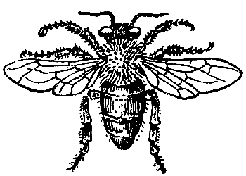
You will find within these pages poets from Homer to Eberhart, from the Psalmist to Franz Wright. Though mostly English-language writers, I'm afraid, some canonical and some not, along with a handful of those who are in the English canon though not of it, and a few lesser known foreigners whose works I found particularly striking. I ought also to mention that, though this is an anthology of pomes, by which I mean words artfully raised to the highest pitch of meaning, I have not confined myself exclusively to verse. A few of this volume's bee-bearing flowers have been pruned from prose—scripture, sermon, polemic essay. But I have kept to verse for the most part; there is, after all, a reason many take verse and poetry to be synonymous. Most authors appear only once, but some more than once, and though the selection is undoubtedly personal to myself, no true reader of bee-pomes can be surprised by the two names that appear most often: Virgil by way of Dryden (eleven extracts), and Emily Dickinson (eleven lyrics). The principal poets, respectively, of the bee within the colony and of the bee without.
The bee-pomes are accompanied by various artworks and artifacts, some, again, focused on the honeybee, some making only incidental use of her. For these visual works it has not been necessary to confine the selection to any particular place or time; they range from Japan to Crete to America, from cave painting to internet comic. But over half are from the last hundred and fifty years, and about an eighth from the last two decades—a testament to the profound cultural effects of mechanical and then digital reproduction. As I did not confine myself to words ostentatiously arranged in formal verse, I do not confine myself to images singled out for display on the wall of a mausoleum or museum. Some, to be sure, come from the brush of Dürer, Poussin, Redon, Dali. But others are decorative, indeed, the cover is a wallpaper; others are functional, whether cup coin vestment or sword-hilt; and still others illustrative, drawn from and for breviary, beekeeping manual, magazine, children's book. A few come from the peculiar world, not of art, but of mass entertainment—film stills, a magazine cover. One, extracted from a YouTube video, paints the bee in an unexpected way.
I have arranged the images and words to complement one another thematically—which is not to say that adjacent images and words do the same thing only in different media. The contents of this volume provide an interesting test of Lessing's theory that poetry deals with movement, painting with simultaneity. It seems to me that those bee-pomes are most powerful which sing of what the bee does: to read them is to become an amateur apiologist, newly aware of the potentialities latent within the little creature buzzing in your periphery. But that is just where the bee is—hardly in focus. Whether a dark fleck moving over a field of flowers or hidden within the dark recesses of its hive, the living bee seems hardly something to be seen at all. So the bee artist must take a different approach. Jewelers recreate in gold the bee's articulated golden body; painters depict scenes from the life of the arcadian beekeeper; printmakers devote themselves to hexagonal divisions of the plane, and so partake in the bee's mania for exact reduplication.
Or almost exact. The honeycomb strives perfectly to pack together honey-filled spheres of wax, but warps itself around the natural obstacles scaffolding it. The honeybee strives perfectly to fulfill her inherited function, but the growth of that inheritance depended on perpetual natural variation. So the now-predominant evolutionary theory would have it, anyway. Darwin knew the honeybee to be one the strongest rebuttals to his theory of evolution by selection, and he devoted several pages of The Origin of Species to explaining the humble origins of the bee's crystalline exactitude. Both for reasons of space, and because this anthology focuses on the aesthetic rather than the intellectual, I have included no works of theoretical apiology. But I encourage the reader not to give the inbred British empiricist the last word: be sure also to consider, inter alia, the French rationalism of Maurice Maeterlinck's The Life of the Bee, the German romanticism of Rudolph Steiner's Lectures on Bees, and the American pragmatism of Tom Seeley's Honeybee Democracy. The devotee of bee poetry need not be learned in apiological lore, but neither can he afford entire ignorance, for the validity of a poetic image depends in part on whether what it links with words are related in the world as well.
An example. I have written of the bee as "her," because we know now that both queen and worker honeybee are female: the latter chastely devoted to her labors, the former promiscuously mating with a dozen or so drones whose myriad seeds she will spend the rest of her life planting. Which is also to say that we now understand the crucial role of the male drones themselves, whose entire life is simply an anticipation of the for them fatal act of insemination. But this knowledge is relatively recent: even Shakespeare spoke of the king rather than the queen bee, and of drones as mere parasites which the colony would be better off without. Alas, this ignorance renders his use of bee imagery less powerful than it might otherwise have been. Our present knowledge, incidentally, was popularized in 1609 by Charles Butler's The Feminine Monarchie, a book of bee theory and beekeeping practice which also contained a peculiar poetic narrative dramatizing the bee colony's Amazonian politics. It is a striking coincidence that Butler arrived at this view after living for the first three decades of his life under England's own Queen Regnant Elizabeth. To call the queen female and the drone male, I should note, is to say that the one lays eggs, the other inseminates; in chromosomal terms (often mistaken for the biological basis of sex), the drone is closer to a flying gamete. Especially close if one conceives of the colony not as an assemblage of autonomous organisms, but as a single spatially fragmented super-organism.
Should one think of the colony in this way? Both scientifically and poetically, the question has no definitive answer. It can matter greatly what answer any given poet accepts—for example, by determining whether he takes the bee colony as a valid image of the human city, or rejects such metaphors as worthy only of "bugmen." Only a few versifiers, most notably Robert Bridges and W.H. Auden, have taken the latter route. Novelists have done so more often; consider Kurt Vonnegut's comic parable "The Drone King," built around the rhyme of "honey" and "money," or E.M. Forster's early sci-fi dystopia "The Machine Stops," which begins with this remarkable challenge: "Imagine, if you can, a small room, hexagonal in shape, like the cell of a bee." Ernst Jünger's The Glass Bees, more subtly, shows a future where men of valor struggle to find their footing, and where living bees have been replaced with mechanical hive. (More recommended reading for those who would follow the bee to meadows too vast for this anthology to contain.) My own view, for what it is worth, is that the bee-city image is valid as far as it goes, and no further; to equate man and bee is of course a mistake, but to insist on an absolute separation between the two is its own kind of self-defeating bugman logic.
As well as an object of theoretical contemplation, the honeybee is more or less a domestic animal, one as familiar to the standard farmyard as sheep, cow, pig, chicken. (A terminological point: the beekeeper keeps a bee colony, a socio-biological unit, in a bee hive, an artificial structure typically made of grass or wood.) Every girl and boy is familiar with the basic facts of bee-life, and indeed these facts have featured in many classics of children's literature: bees gather nectar from flowers, as in the midrash of King Solomon's wisdom regarding the bee; bears and other wild beasts love to steal the honeycomb, as in pseudo-Aesop's moralistic fable of the Bear and the Bees, which sublimated into amoral innocence became A.A. Milne's Winnie-the-Pooh; and when angered the honeybees will sting, and afterwards die, a truth at least implicit in Frank L. Stockton's "The Bee-Man of Orn." While these narratives would overcrowd the anthology, I have included an illustration of each.
It is tempting to think that the risk of stings is exaggerated in the child's mind's eye. Although at least modern domesticated honeybees will rarely sting without good cause, the child is nevertheless right to fear the sting, for two reasons. First, the untrained eye often struggles to discern the honeybee from her more malevolent cousin the wasp. Or, for that matter, from the thousand other varieties of bee besides Apis mellifera; my selection has occasionally taken advantage of the word's ambiguity to include poems which the author may well have intended to honor the bumble. Second, even when a bee it indubitably is, the child lacks the ability to discern what will anger her and what will not. The wild bees in the childhood of the race were more fearsome than those beekeepers keep today, and it should be no surprise that the earliest bee-pomes and pictures focus on the menace of the swarm. Even today, it cannot be denied that the threat of the sting lends the sweetness of the honey a pleasingly complex undertone. As in many a fairy-tale, the imagination moves swiftly from the child's play of honey-hunting to the erotic dissonance of bee-stung honeyed lips.
Some practical bee-facts are less universally known in this excessively urbane age. A brief primer on the travails of the beekeeper: The honey and wax cannot easily be harvested without demolishing the hive (although modern developments in hive technology have made non-fatal honey collection more feasible). Even if the harvest does not kill the colony, the loss of its winter food supply might. Further, once or twice a year, if it has the resources, a colony will send up a swarm led by a queen bee bound to start a new colony a few miles away. Swarms are necessary for the propagation of the species, but new colonies often fail to prosper, and a swarm's departure can leave the old colony severely weakened. Beekeepers have always, then, worried constantly about whether their bees will one day simply disappear from the hive, due to swarming, starvation, sickness, or whatever else. Though the dangers posed by industrial farming practices are real, the outsize fame of "colony collapse disorder" measures instead (as well as the influence of skilled propagandists) our shock at rediscovering the curious melancholy inherent in the apiarist's art. Beekeeping remains less violent than slaughtering livestock, for the beekeeper does not intend to kill the colony, but neither do man and bee share the friendship of man and dog or man and horse. Similarly, while an experienced beekeeper can know much about bee health, our intuitions about 'what it is like to be a honeybee' just go less far than for our mammalian companions.
Where inscrutable fatal chance lurks, superstition is never far away. Many traditions have developed around how to prevent the emptying of a hive, and how to regain bees for a hive once emptied, and these, too, have become comb for the poetic honey mills. Two traditions in particular are worth noting, one ancient and one modern, for they present something like the history of religion in microcosm.
First: Bugonia names a Roman ritual, evocatively described by Virgil, in which an ox would be sacrificed in the belief that a colony of bees would generate within its corpse; Samson's "out of the eater" riddle may be related to a similar Near Eastern belief regarding the corpses of lions, although the theological significance of the riddle episode is a trickier matter. In truth, of course, as a Rudyard Kipling poem humorously observes, all that grows in a corpse is putrid flies—mistaking fly larvae for bee larvae being an understandable but unfortunate error. Take the bugonia travesty as an emblem of the futility of ritual sacrifice as a means to reconstitute the harmonious regime once it has descended into disorder.
Second: According to a European folk custom of recent centuries—also well-described in another Kipling poem—important family news, public or private, must be told immediately to the bees lest the hives empty out. While one doubts that telling the bees has any measurable effect on the likelihood that a colony will collapse, it seems a natural enough thought, on multiple levels. Mundanely, the humming of bees suggests they are voluble gossips, and apprising them of local news might serve to keep them interested in their present environs. More spiritually, speaking one's private thoughts where the bee-hum will drown them out is a bit like confessing directly to God—or, in light of beekeeping's melancholy, to those whom one has wronged. Do honeybees have power to forgive sins? Since the ancient Greeks the bee has been imagined as a kind of psychopomp, but only with the coming of Christianity have poets consistently imagined that bees and forgiveness have something to do with one another. So take "telling the bees" as an emblem of that alternative to ritual sacrifice, Christian forgiveness.
Such, at least, is my theological argument, admittedly controvertible. Retreating to firmer ground, I say simply that while religious doctrines have developed over time, the honeybee has held its position as an image of divinity from time immemorial. When God promises his people an earthly paradise, he promises them milk and honey (which along with eggs and ice will make ice cream). Beeswax candles are the highest form of illumination (with apologies to Herman Melville); wild honey the highest form of food, a sweetness so divine as to hover at the border of life and death (as Melville himself admits). So long as these realities remain unchanged, the honeybee cannot lose her poetic power.
That power is perhaps greater in English than any other language, given the simple pun inherent in the creature's name: to bee or not to bee? At least, an Anglophone bee-pome devotee and would-be bee-poet (I have spared the reader my own meager attempts at the topos) can be excused for saying so. I hope that you enjoy the images and words collected here, and that they deepen your understanding of any future bees you encounter in flesh and blood, flower and comb, honey and sting.
Ludovico Ambrosius
University of St. Isidore
January 2023
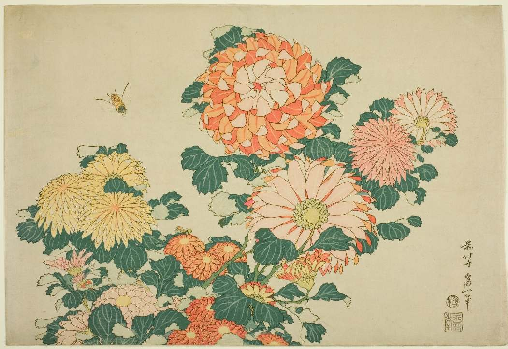
I. Locus Amoenus
The Lake Isle of Innisfree
I will arise and go now, and go to Innisfree,
And a small cabin build there, of clay and wattles made:
Nine bean-rows will I have there, a hive for the honey-bee;
And live alone in the bee-loud glade.
And I shall have some peace there, for peace comes dropping slow,
Dropping from the veils of the morning to where the cricket sings;
There midnight's all a glimmer, and noon a purple glow,
And evening full of the linnet's wings.
I will arise and go now, for always night and day
I hear lake water lapping with low sounds by the shore;
While I stand on the roadway, or on the pavements grey,
I hear it in the deep heart's core.
William Butler Yeats
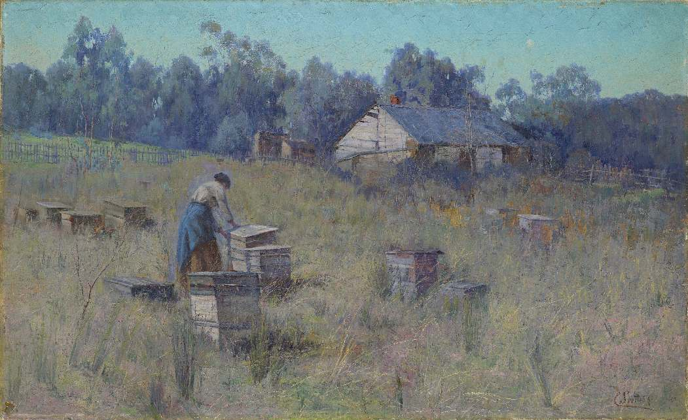
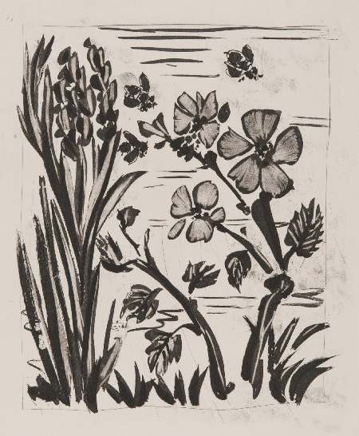
Wild Bees
These children of the sun which summer brings
As pastoral minstrels in her merry train
Pipe rustic ballads upon busy wings
And glad the cotters' quiet toils again.
The white-nosed bee that bores its little hole
In mortared walls and pipes its symphonies,
And never absent couzen, black as coal,
That Indian-like bepaints its little thighs,
With white and red bedight for holiday,
Right earlily a-morn do pipe and play
And with their legs stroke slumber from their eyes.
And aye so fond they of their singing seem
That in their holes abed at close of day
They still keep piping in their honey dreams,
And larger ones that thrum on ruder pipe
Round the sweet smelling closen and rich woods
Where tawny white and red flush clover buds
Shine bonnily and bean fields blossom ripe,
Shed dainty perfumes and give honey food
To these sweet poets of the summer fields;
Me much delighting as I stroll along
The narrow path that hay laid meadow yields,
Catching the windings of their wandering song.
The black and yellow bumble first on wing
To buzz among the sallow's early flowers,
Hiding its nest in holes from fickle spring
Who stints his rambles with her frequent showers;
And one that may for wiser piper pass,
In livery dress half sables and half red,
Who laps a moss ball in the meadow grass
And hoards her stores when April showers have fled;
And russet commoner who knows the face
Of every blossom that the meadow brings,
Starting the traveller to a quicker pace
By threatening round his head in many rings:
These sweeten summer in their happy glee
By giving for her honey melody.
John Clare
The Faerie Queene, First Booke, I.xli.
And more, to lulle him in his slumber soft,
A trickling streame from high rock tumbling downe,
And ever-drizling raine upon the loft,
Mixt with a murmuring winde, much like the sowne
Of swarming Bees, did cast him in a swowne:
No other noyse, nor peoples troublous cryes,
As still are wont t'annoy the walled towne,
Might there be heard: but carelesse Quiet lyes,
Wrapt in eternall silence farre from enemyes.
Edmund Spenser
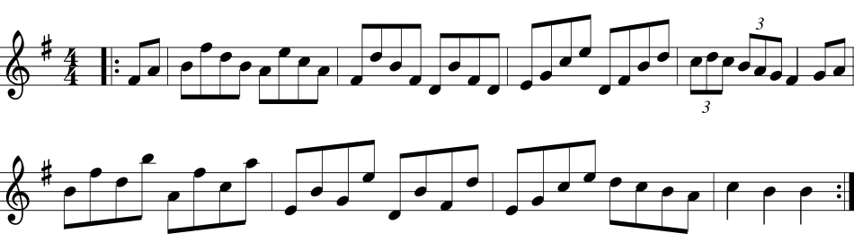
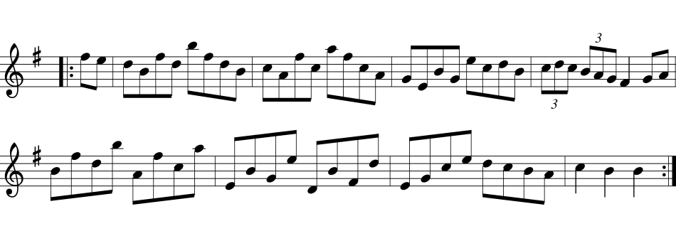
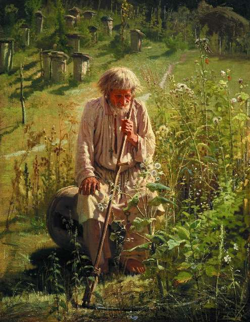
from To Autumn
Season of mists and mellow fruitfulness,
Close bosom-friend of the maturing sun;
Conspiring with him how to load and bless
With fruit the vines that round the thatch-eves run;
To bend with apples the moss'd cottage-trees,
And fill all fruit with ripeness to the core;
To swell the gourd, and plump the hazel shells
With a sweet kernel; to set budding more,
And still more, later flowers for the bees,
Until they think warm days will never cease,
For Summer has o'er-brimm'd their clammy cells
John Keats
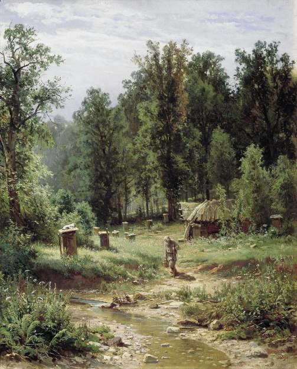
Work Without Hope
All Nature seems at work. Slugs leave their lair—
The bees are stirring—birds are on the wing—
And Winter slumbering in the open air,
Wears on his smiling face a dream of Spring!
And I the while, the sole unbusy thing,
Nor honey make, nor pair, nor build, nor sing.
Yet well I ken the banks where amaranths blow,
Have traced the fount whence streams of nectar flow.
Bloom, O ye amaranths! bloom for whom ye may,
For me ye bloom not! Glide, rich streams, away!
With lips unbrightened, wreathless brow, I stroll:
And would you learn the spells that drowse my soul?
Work without Hope draws nectar in a sieve,
And Hope without an object cannot live.
Samuel Taylor Coleridge
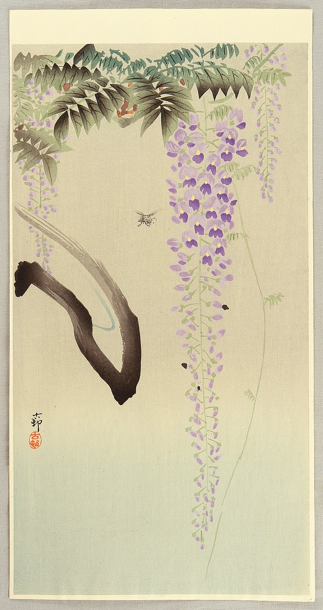
A Prayer in Spring
Oh, give us pleasure in the flowers to-day;
And give us not to think so far away
As the uncertain harvest; keep us here
All simply in the springing of the year.
Oh, give us pleasure in the orchard white,
Like nothing else by day, like ghosts by night;
And make us happy in the happy bees,
The swarm dilating round the perfect trees.
And make us happy in the darting bird
That suddenly above the bees is heard,
The meteor that thrusts in with needle bill,
And off a blossom in mid air stands still.
For this is love and nothing else is love,
The which it is reserved for God above
To sanctify to what far ends He will,
But which it only needs that we fulfil.
Robert Frost
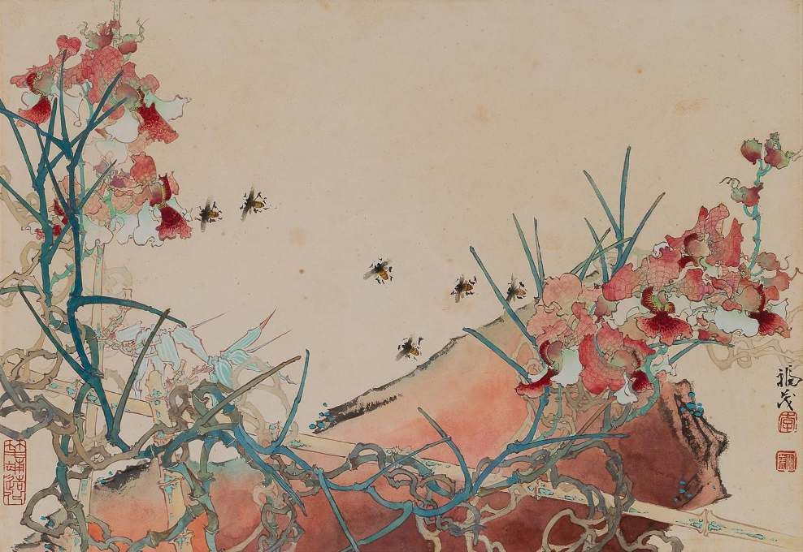
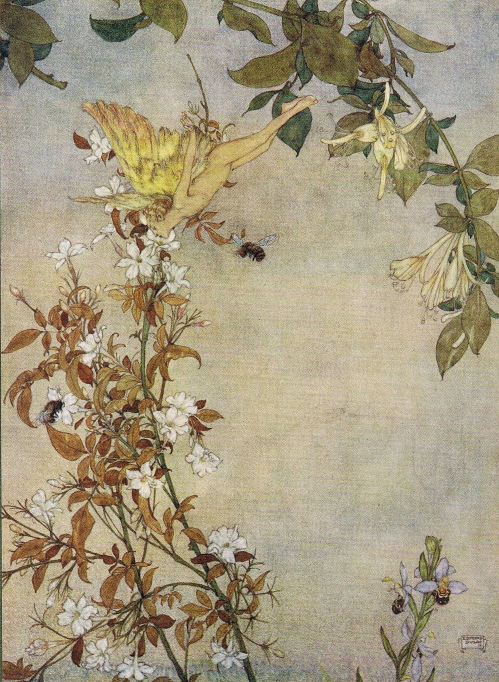
1755
To make a prairie it takes a clover and one bee,
One clover, and a bee,
And revery.
The revery alone will do,
If bees are few.
Emily Dickinson
from The Tempest
Where the Bee sucks, there suck I:
In a Cowslip's bell, I lie;
There I cowch when Owles doe crie.
On the Batts backe I doe flie
After Sommer merrily.
Merrily, merrily shall I liue now
Vnder the blossom that hangs on the Bow
William Shakespeare
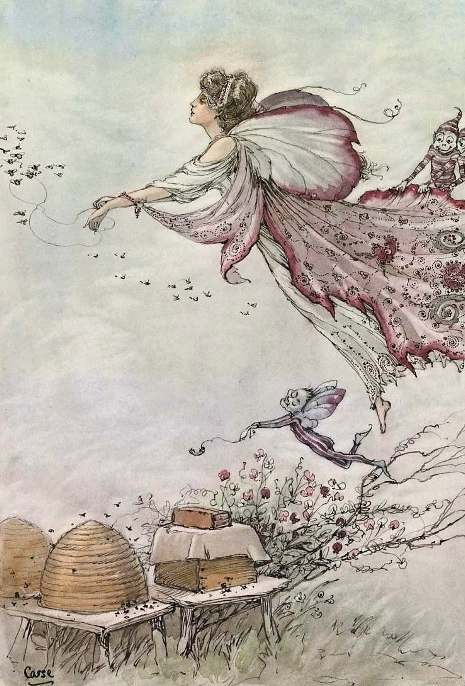
from Georgics IV.
But (what's more strange) their modest appetites,
Averse from Venus, fly the nuptial rites.
No lust enervates their heroic mind,
Nor wastes their strength on wanton womankind;
But in their mouths reside their genial powers:
They gather children from the leaves and flowers.
Thus make they kings to fill the regal seat,
And thus their little citizens create,
And waxen cities build, the palaces of state.
And oft on rocks their tender wings they tear,
And sink beneath the burdens which they bear:
Such rage of honey in their bosom beats,
And such a zeal they have for flowery sweets
Virgil, trans. John Dryden
916
His Feet are shod with Gauze –
His Helmet, is of Gold,
His Breast, a Single Onyx
With Chrysoprase, inlaid.
His Labor is a Chant –
His Idleness – a Tune –
Oh for a Bee's experience
Of Clovers, and of Noon!
Emily Dickinson
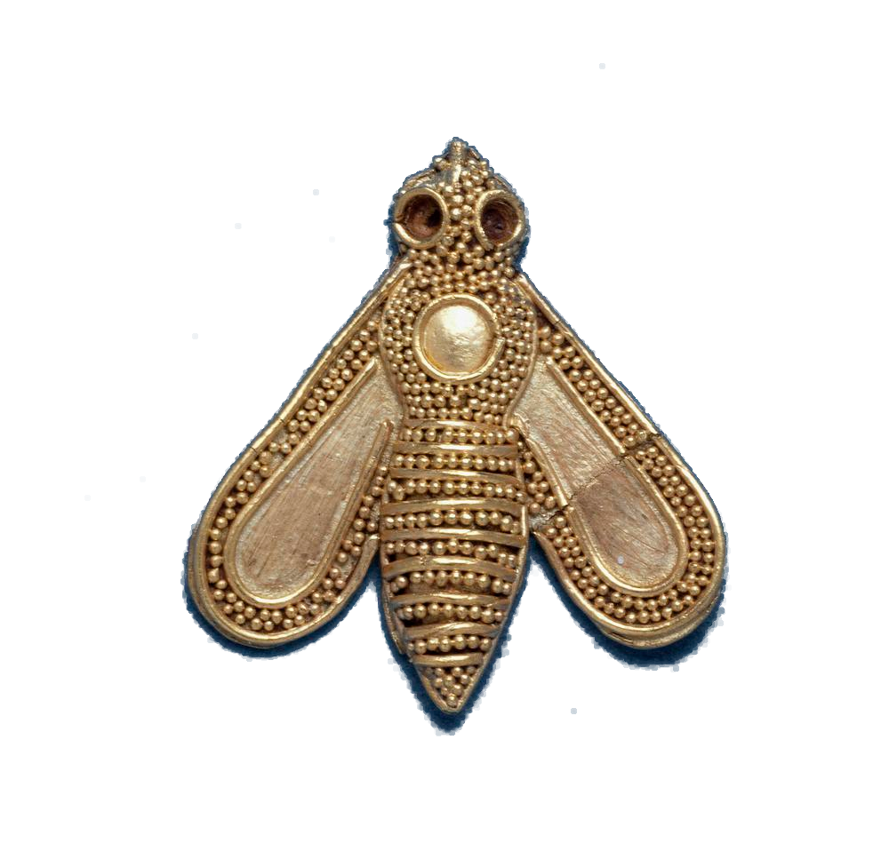
Solomon the Wise
The bee a real flower will not spare;
The kneeling one will be the girl.
The Queen of Sheba
Tell me, king, if these flowers, these kids
Are like, or unlike in their kind?

213
Did the Harebell loose her girdle
To the lover Bee
Would the Bee the Harebell hallow
Much as formerly?
Did the "Paradise" – persuaded –
Yield her moat of pearl –
Would the Eden be an Eden,
Or the Earl – an Earl?
Emily Dickinson
1224
Like Trains of Cars on Tracks of Plush
I hear the level Bee –
A Jar across the Flowers goes
Their Velvet Masonry
Withstands until the sweet Assault
Their chivalry consumes –
While He, victorious tilts away
To vanquish other Blooms.
Emily Dickinson
Amarillis [from Idyll III.]
Fair Amaryllis, wilt thou never peep
From forth the cave, & call me, & be mine?
Lo, apples ten I bear thee from the steep,
These didst thou long for, & all these are thine.
Ah, would I were a honey-bee to sweep
Through ivy, & the bracken, & woodbine;
To watch thee waken, Love, & watch thee sleep,
Within thy grot below the shadowy pine.
Now know I Love, a cruel god is he,
The wild beast bare him in the wild wood drear;
& truly to the bone he burneth me.
But, black-browed Amaryllis, ne'er a tear,
Nor sigh, nor blush, nor aught have I from thee;
Nay, nor a kiss, a little gift and dear.
Theocritus, trans. Andrew Lang
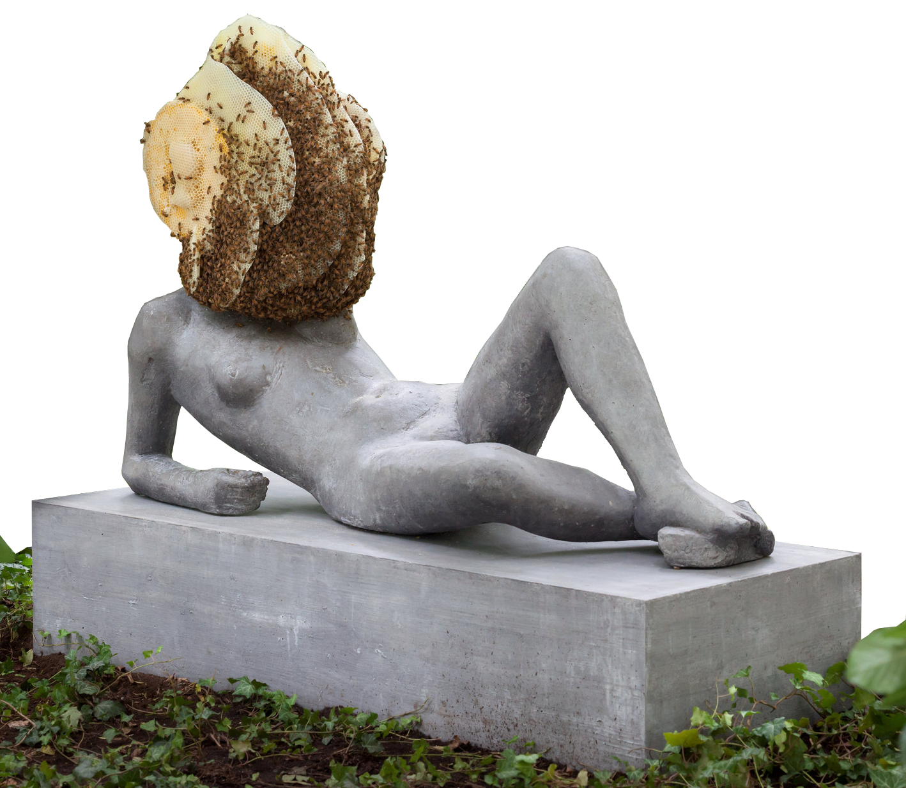
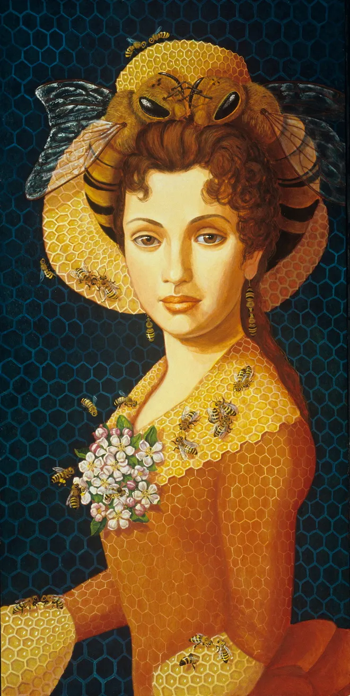
from Ode on Melancholy
She dwells with Beauty—Beauty that must die;
And Joy, whose hand is ever at his lips
Bidding adieu; and aching Pleasure nigh,
Turning to poison while the bee-mouth sips
John Keats
from The Rape of Lucrece
If, Colatine, thine honor lay in me,
From me by strong assault it is bereft;
My hony lost, and I, a Drone-like bee,
Have no Perfection of my sommer left,
But rob'd & ransackt by injurious theft.
In thy weak hive a wandring waspe hath crept
& sucked the hony which thy chaste Bee kept
William Shakespeare
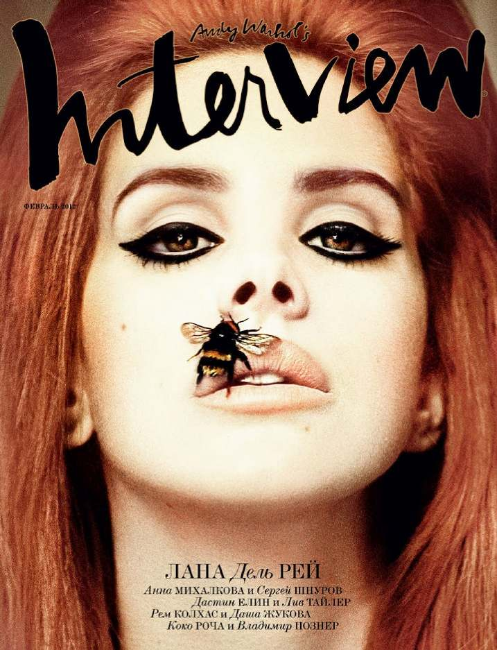
1627
The Pedigree of Honey
Does not concern the Bee –
A Clover, any time, to him,
Is Aristocracy –
Emily Dickinson
1763
Fame is a bee.
It has a song –
It has a sting –
Ah, too, it has a wing.
Emily Dickinson
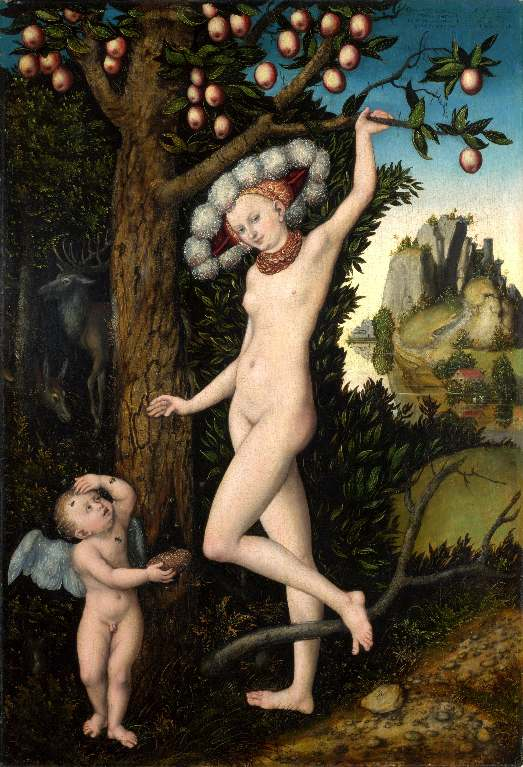
On the Lady Mary Stewart who Eateing a honycomb a Bee flew out and stung her neck
This Bee alone of all his race
Did the unhappy day survive
When Sulp'hrous flames in every place
With death & horror fill'd the Hive.
And haveing all those dangers past
He thought he now need fear no more
But hid in mines he at last:
Might live securely as before.
But Sylvia soon disturb'd his rest
For whilst she searcht each little cell
She chanct on that among the rest
Where the poor bee made choice to dwell.
He saw his friends all slain before
Himself of shelter now depriv'd,
He saw the foe the food devour
Which he did for his age provide.
And now the little injur'd thing
Dos for a quick revenge prepare:
Rage gave new sharpnesse to his sting
With which he hasts to wound the faire.
But when to those sweet lips he fled
Which his own honey did out doe
And which excell'd in blushing red
The rose whence he that honey drew,
That lovely place his flight did stay
And all his anger Ended there
But soon her eyes forct him away
Whose neighb'ring raies he could not beare.
With hasty wings to her fair neck
Quite dazl'd & amaz'd he flies
And there some gentle shade dos seek
To shelter him from her bright eyes.
Its beauties when he saw, sayes he,
This place dos gayest feilds excell:
Never before did happy Bee
Midst such delicious sweetnesse dwell.
Now I am reconcil'd to fate,
Forgive all wrongs, forget all feare,
For no bold hand dares violate
This sacred place so heavenly faire.
Sylvia whose neck was never prest
With any touches but her own
With anger strikes the little guest
Which her so oft did importune.
The Bee who saw his death was nigh
Unlesse he from the place wou'd goe
That like an Hero he might die
He at that instance wounds his foe.
The Bee deserv'd no better fate
'Cause he made Sylvia pains Endure:
His crime he thus did expiate
And his own honey wrought the cure.
Learn pity Sylvia from this Bee
And cure the painfull wounds we feel,
Which as they all were given by thee
Thou at an Easier rate canst heale.
One smile in that faire face those wounds will cure
Which thy bright eyes have made us long Endure.
John Wilmot, Earl of Rochester
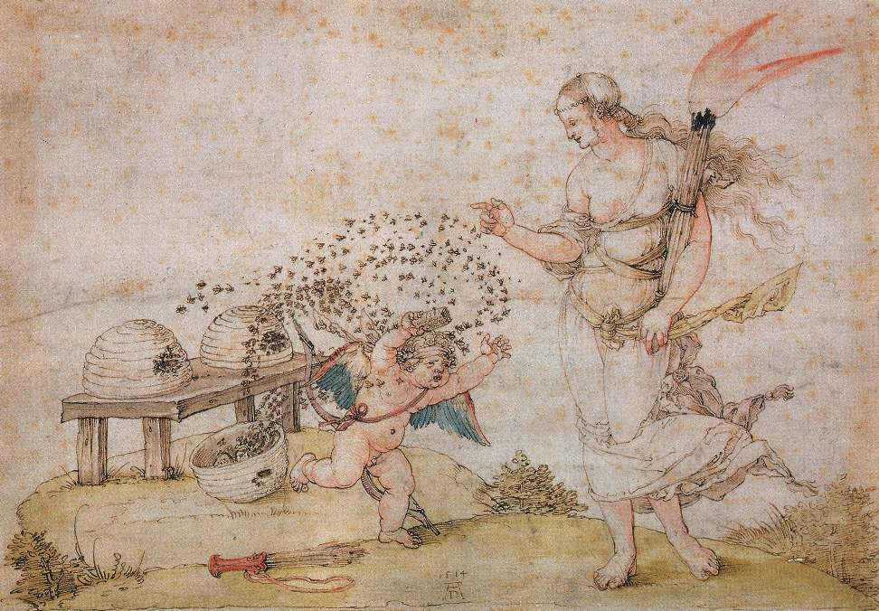
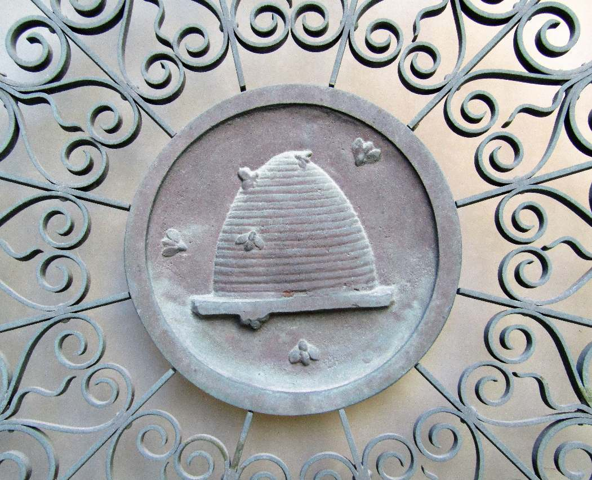
II. Common Business
from Georgics IV.
Of all the race of animals, alone
The bees have common cities of their own,
And common sons; beneath one law they live,
And with one common stock their traffic drive.
Each has a certain home, a several stall;
All is the state's, the state provides for all.
Mindful of coming cold, they share the pain,
And hoard, for winter's use, the summer's gain.
Some o'er the public magazines preside,
And some are sent new forage to provide;
These drudge in fields abroad, and those at home
Lay deep foundations for the laboured comb,
With dew, narcissus-leaves, & clammy gum.
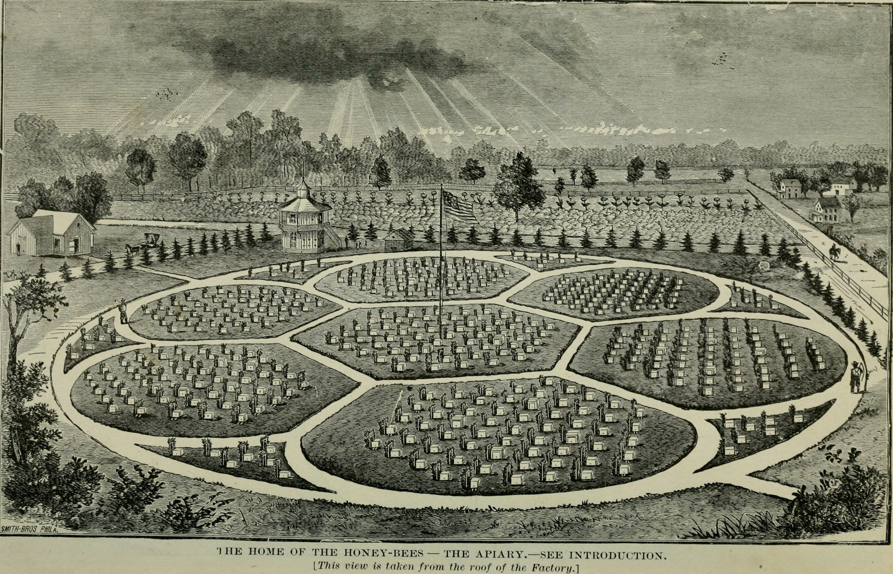
Some nurse the future nation of the hive;
Sweet honey some condense; some purge the grout;
The rest, in cells apart, the liquid nectar shut:
All, with united force, combine to drive
The lazy drones from the laborious hive:
With envy stung, they view each other's deeds;
With diligence the fragrant work proceeds.
As, when the Cyclops, at the almighty nod,
New thunder hasten for their angry god,
Subdued in fire the stubborn metal lies;
One brawny smith the puffing bellows plies,
And draws and blows reciprocating air:
Others to quench the hissing mass prepare;
With lifted arms they order every blow,
And chime their sounding hammers in a row;
With laboured anvils Ætna groans below.
Strongly they strike; huge flakes of flames expire;
With tongs they turn the steel, & vex it in the fire.
If little things with great we may compare,
Such are the bees, and such their busy care;
Studious of honey, each in his degree,
The youthful swain, the grave experienced bee—
That in the field; this, in affairs of state
Employed at home, abides within the gate,
To fortify the combs, to build the wall,
To prop the ruins, lest the fabric fall:
But, late at night, with weary pinions come
The labouring youth, and heavy laden, home.
Plains, meads, & orchards, all the day he plies;
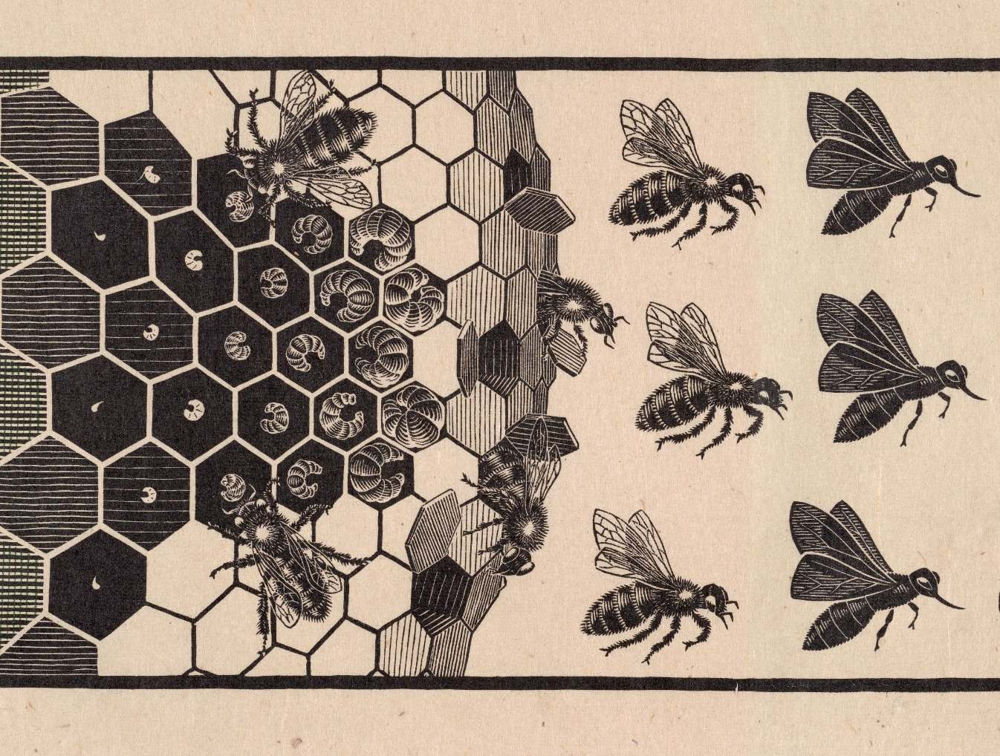
The gleans of yellow thyme distend his thighs:
He spoils the saffron flowers; he sips the blues
Of violets, wilding blooms, & willow dews.
Their toil is common, common is their sleep;
They shake their wings when morn begins to peep,
Rush through the city-gates without delay,
Nor ends their work, but with declining day.
Then, having spent the last remains of light,
They give their bodies due repose at night,
When hollow murmurs of their evening bells
Dismiss the sleepy swains, & toll them to their cells
Virgil, trans. John Dryden
from The Grumbling Hive
A Spacious Hive well stock'd with Bees,
That lived in Luxury & Ease;
And yet as fam'd for Laws & Arms,
As yielding large & early Swarms;
Was counted the great Nursery
Of Sciences & Industry.
No Bees had better Government,
More Fickleness, or less Content.
They were not Slaves to Tyranny,
Nor ruled by wild Democracy;
But Kings, that could not wrong, because
Their Power was circumscrib'd by Laws.
These Insects lived like Men, and all
Our Actions they perform'd in small:
They did whatever's done in Town,
& what belongs to Sword, or Gown:
Tho' th'Artful Works, by nible Slight;
Of minute Limbs, 'scaped Human Sight
Yet we've no Engines; Labourers,
Ships, Castles, Arms, Artificers,
Craft, Science, Shop, or Instrument,
But they had an Equivalent:
Which, since their Language is unknown,
Must be call'd, as we do our own.
As grant, that among other Things
They wanted Dice, yet they had Kings;
& those had Guards; from whence we may
Justly conclude, they had some Play;
Unless a Regiment be shewn
Of Soldiers, that make use of none
Bernard Mandeville
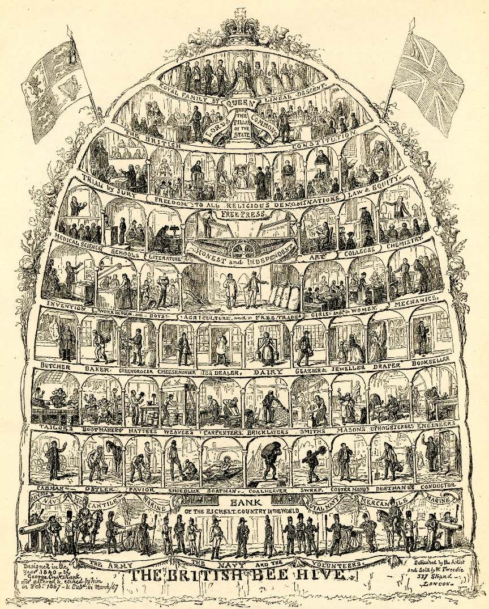
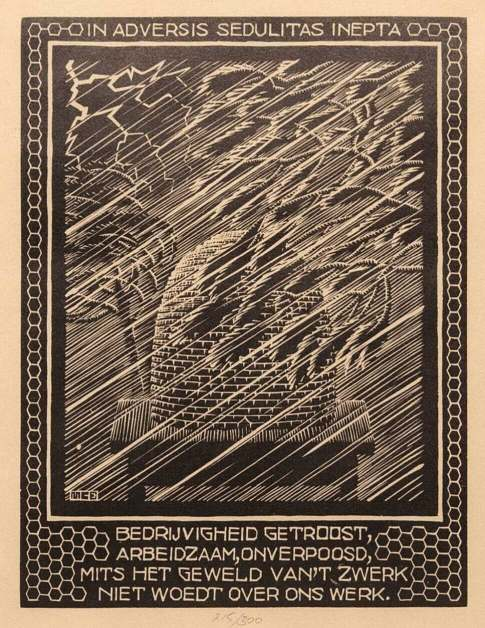
from The Boke Named the Governour
For who can denie but that all thynge in heuen and erthe is gouerned by one god, by one perpetuall ordre, by one prouidence? One Sonne ruleth ouer the day, and one Moone ouer the nyghte; and to descende downe to the erthe, in a litell beest, whiche of all other is moste to be maruayled at, I meane the Bee, is lefte to man by nature, as it semeth, a perpetuall figure of a iuste gouernaunce or rule: who hath amonge them one princpall Bee for gouernour, who excelleth all other in greatness yet hath no pricke or sting but in hym is more knowledge than in the residue: For if the day folowyng shall be fayre and drye and that the bees may issue out of theyr stalles without peryll of rayne or vehement wynde, in the mornyng erely he calleth them, makyng a noyse as it were the sowne of a horne or a trumpet; and with that all the residue prepare them to labour, and fleeth abrode, gatheryng nothing but that shall be swete and profitable, all though they sitte often tymes on herbes and other thinges that be venomous and stynkinge.
The capitayne hym selfe laboureth nat for his sustinance, but all the other for hym; he onely seeth that if any drane or other unprofitable bee entreth in to the hyue, and consumethe the hony, gathered by other, that he be immediately expelled from that company. And when there is an other nombre of bees encreased, they semblably haue also a capitayne, whiche be nat suffered to continue with the other. Wherfore this newe company gathered in to a swarme, hauyng their capitayne amonge them, and enuironynge hym to perserue hym from harme, they issue forthe sekyng a newe habitation, whiche they fynde in some tree, except with some pleasant noyse they be alured and con-uayed unto an other hyue. I suppose who seriously beholdeth this example, and hath any commendable witte, shall therof gather moche matter to the fourmynge of a pub-like weale.
Thomas Elyot
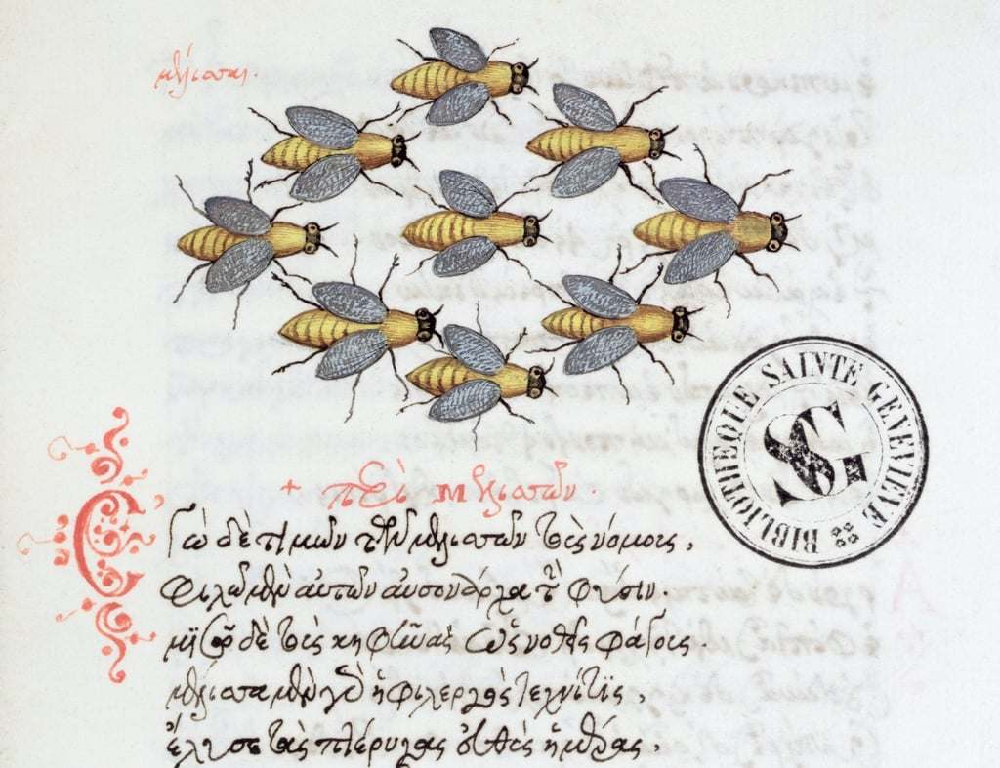
from Aeneid I.
The toiling Tyrians on each other call
To ply their labour: some extend the wall;
Some build the citadel; the brawny throng
Or dig, or push unwieldly stones along.
Some for their dwellings choose a spot of ground,
Which, first design'd, with ditches they surround.
Some laws ordain; and some attend the choice
Of holy senates, and elect by voice.
Here some design a mole, while others there
Lay deep foundations for a theatre;
From marble quarries mighty columns hew,
For ornaments of scenes, & future view.
Such is their toil, and such their busy pains,
As exercise the bees in flow'ry plains,
When winter past, and summer scarce begun,
Invites them forth to labour in the sun;
Some lead their youth abroad, while some condense
Their liquid store, and some in cells dispense;
Some at the gate stand ready to receive
The golden burthen, and their friends relieve;
All with united force, combine to drive
The lazy drones from the laborious hive:
With envy stung, they view each other's deeds;
The fragrant work with diligence proceeds
Virgil, trans. John Dryden
from Paradise Lost I.
Mean while the winged Haralds by command
Of Sovran power, with awful Ceremony
And Trumpets sound throughout the Host proclaim
A solemn Councel forthwith to be held
At Pandaemonium, the high Capital
Of Satan and his Peers: thir summons call'd
From every Band & squared Regiment
By place or choice the worthiest; they anon
With hundreds and with thousands trooping came
Attended: all access was throng'd, the Gates
And Porches wide, but chief the spacious Hall
(Though like a cover'd field, where Champions bold
Wont ride in arm'd, and at the Soldans chair
Defi'd the best of Panim chivalry
To mortal combat or carreer with Lance)
Thick swarm'd, both on the ground & in the air,
Brusht with the hiss of russling wings. As Bees
In spring time, when the Sun with Taurus rides,
Poure forth thir populous youth about the Hive
In clusters; they among fresh dews and flowers
Flie to & fro, or on the smoothed Plank,
The suburb of thir Straw-built Cittadel,
New rub'd with Baume, expatiate and confer
Thir State affairs. So thick the aerie crowd
Swarm'd and were straitn'd
John Milton
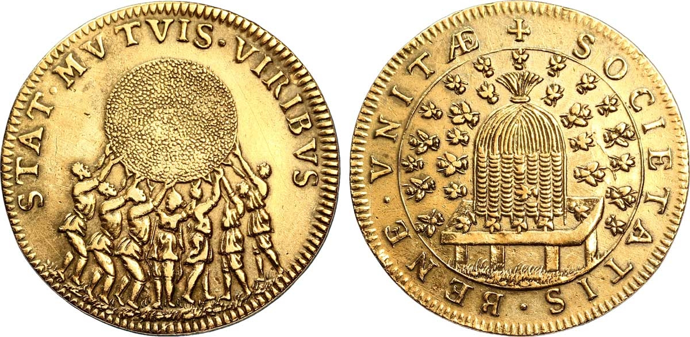
How Doth the Little Busy Bee
How doth the little busy bee
Improve each shining hour,
And gather honey all the day
From every opening flower!
How skilfully she builds her cell!
How neat she spreads the wax!
And labors hard to store it well
With the sweet food she makes.
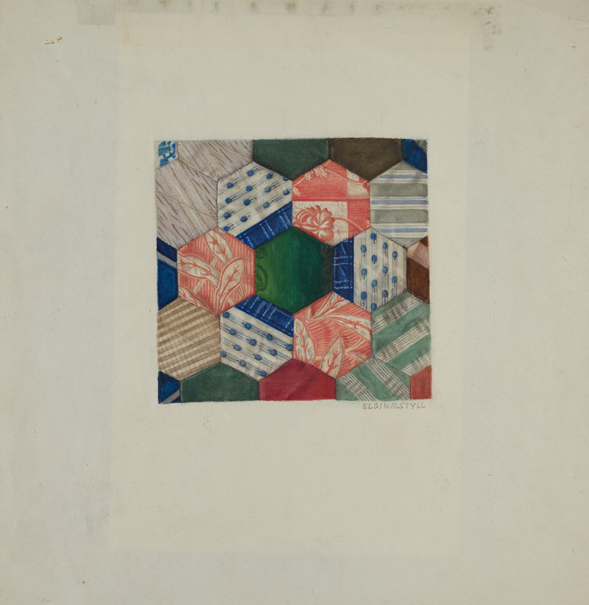
In works of labor or of skill,
I would be busy too;
For Satan finds some mischief still
For idle hands to do.
In books, or work, or healthful play,
Let my first years be passed,
That I may give for every day
Some good account at last.
Isaac Watts
Esthétique du Mal III.
His firm stanzas hang like hives in hell
Or what hell was, since now both heaven & hell
Are one, and here, O terra infidel.
The fault lies with an over-human god,
Who by sympathy has made himself a man
And is not to be distinguished, when we cry
Because we suffer, our oldest parent, peer
Of the populace of the heart, the reddest lord,
Who has gone before us in experience.
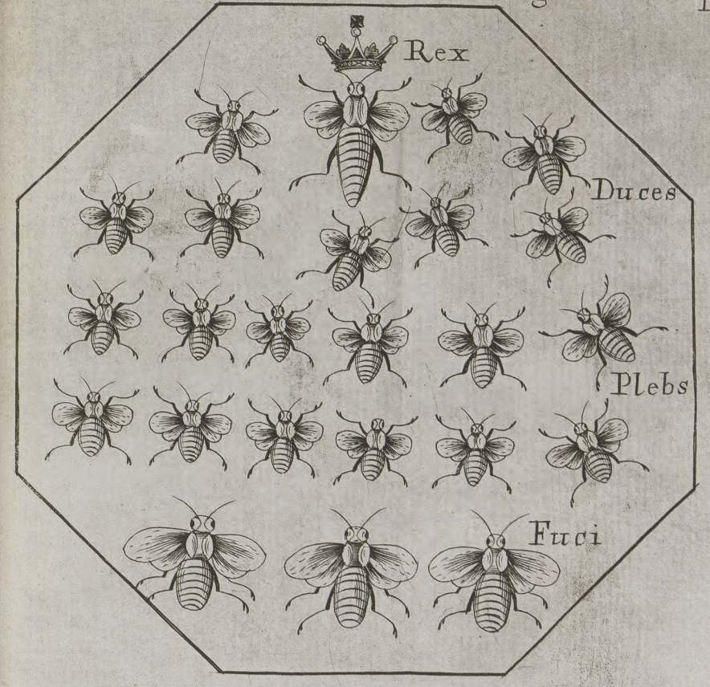
If only he would not pity us so much,
Weaken our fate, relieve us of woe both great
And small, a constant fellow of destiny,
A too, too human god, self-pity's kin
And uncourageous genesis . . . It seems
As if the health of the world might be enough.
It seems as if the honey of common summer
Might be enough, as if the golden combs
Were part of a sustenance itself enough,
As if hell, so modified, had disappeared,
As if pain, no longer satanic mimicry,
Could be borne, as if we were sure to find our way.
Wallace Stevens
from Henry V
EXETER
…For Gouernment, though high, & low, & lower,
Put into parts, doth keepe in one consent,
Congreeing in a full and natural close,
Like Musicke.
CANTERBURY
Therefore doth heauen diuide
The state of man in diuers functions,
Setting endeuour in continual motion:
To which is fixed as an ayme or butt,
Obedience: for so worke the Hony Bees,
Creatures that by a rule in Nature teach
The Act of Order to a peopled Kingdome.
They haue a King, and Officers of sorts,
Where some like Magistrates correct at home:
Others, like Merchants venter Trade abroad:
Others, like Souldiers armed in their stings,
Make boote vpon the Summers Veluet buddes:
Which pillage, they with merry march bring home
To the Tent-royal of their Emperor:
Who busied in his Maiesties surueyes
The singing Masons building roofes of Gold,
The ciuil Citizens kneading vp the hony;
The poore Mechanicke Porters, crowding in
Their heauy burthens at his narrow gate:
The sad-ey'd Iustice with his surly humme,
Deliuering ore to Executors pale
The lazie yawning Drone: I this inferre,
That many things hauing full reference
To one consent, may worke contrariously
William Shakespeare
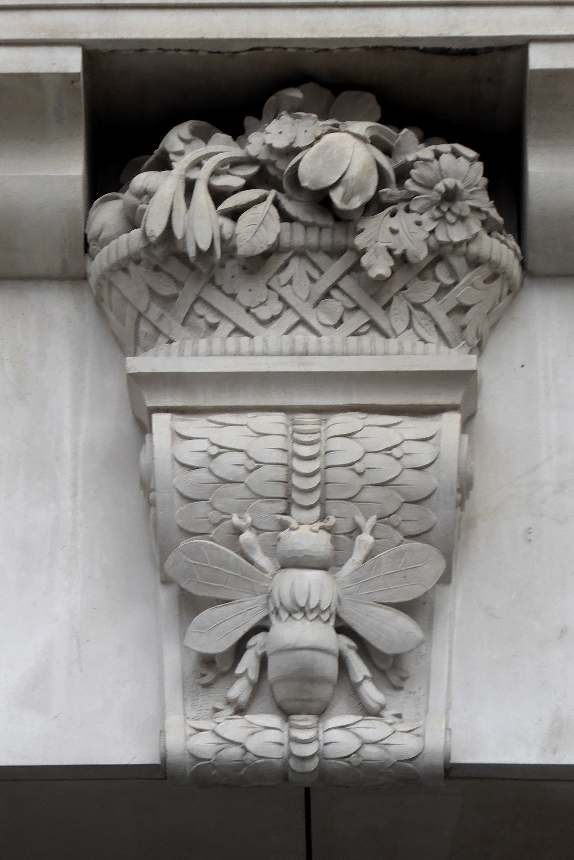
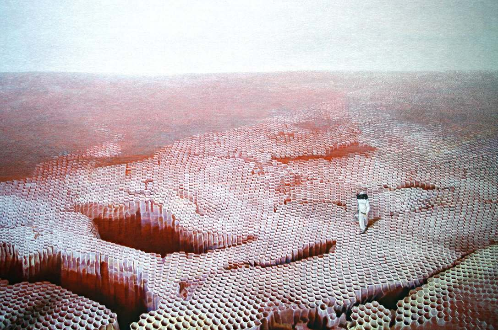
from The World at a Distance
He travels and expatiates, as the bee
From flower to flower, so he from land to land:
The manners, customs, policy of all
Pay contribution to the store he gleans;
He sucks intelligence in every clime,
And spreads the honey of his deep research
At his return,—a rich repast for me
William Cowper
In A Garden
Thought is a garden wide and old
For airy creatures to explore,
Where grow the great fantastic flowers
With truth for honey at the core.
There like a wild marauding bee
Made desperate by hungry fears,
From gorgeous If to dark Perhaps
I blunder down the dusk of years.
Bliss Carman
from De Copia
Our student will flit like a busy bee thro' the entire garden of literature, will light on every blossom, collect a little nectar from each, and carry it to his hive. Since there is such an abundance of material that one cannot gather everything, he will at least take the most striking and fit this into his scheme of work.
Desiderius Erasmus
from Proverbs 6 [Apocrypha]
Go to the bee, and learn how diligent she is, and how earnestly she is engaged in her work; whose labors kings and private men use for their health, and she is desired and respected by all: though weak in body, she is advanced by honoring wisdom.
Septuagint, trans. Lancelot Brenton
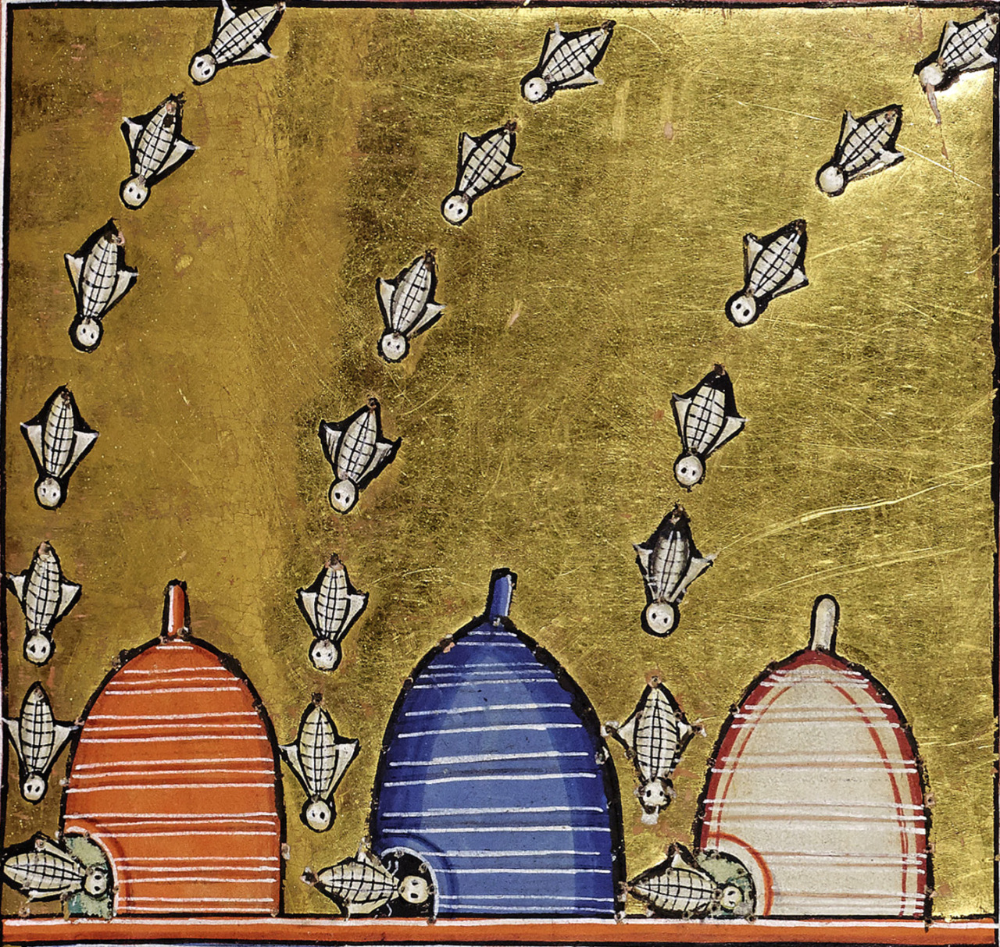
Wild Honey
Where hints of racy sap and gum
Out of the old dark forest come;
Where birds their beaks like hammers wield,
And pith is pierced and bark is peeled;
Where the green walnut's outer rind
Gives precious bitterness to the wind;
There lurks the sweet creative power,
As lurks the honey in the flower.
In winter's bud that bursts in spring,
In nut of autumn's ripening,
In acrid bulb beneath the mold,
Sleeps the elixir, strong and old,
That Rosicrucians sought in vain,—
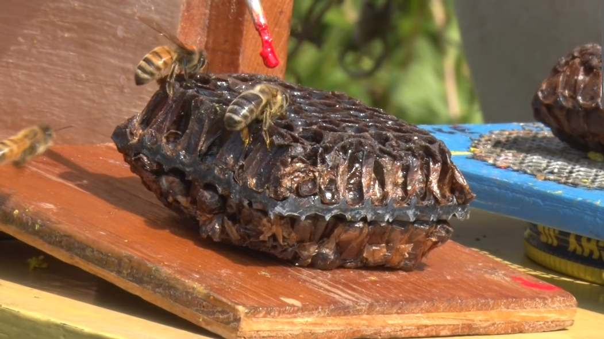
Life that renews itself again!
What bottled perfume is so good
As fragrance of split tulip-wood?
What fabled drink of god or muse
Was rich as purple mulberry juice?
And what school-polished gem of thought
Is like the rune from Nature caught?
He is a poet strong and true
Who loves wild thyme and honey-dew;
And like a brown bee works and sings
With morning freshness on his wings,
And a golden burden on his thighs,—
The pollen-dust of centuries!
Maurice Thompson
from Purgatorio XVIII.
Every substantial form, that segregate
From matter is, and with it is united,
Specific power has in itself collected,
Which without act is not perceptible,
Nor shows itself except by its effect,
As life does in a plant by the green leaves.
But still, whence cometh the intelligence
Of the first notions, man is ignorant,
And the affection for the first allurements,
Which are in you as instinct in the bee
To make its honey; and this first desire
Merit of praise or blame containeth not
Dante, trans. Henry Wadsworth Longfellow
from De Rerum Natura III.
But what's so agile must of seeds consist
Most round, most tiny, that they may be moved,
When hit by impulse slight. So water moves,
In waves along, at impulse just the least—
Being create of little shapes that roll;
But, contrariwise, the quality of honey
More stable is, its liquids more inert,
More tardy its flow; for all its stock of matter
Cleaves more together, since, indeed, 'tis made
Of atoms not so smooth, so fine, and round
Lucretius, trans. William Ellery Leonard
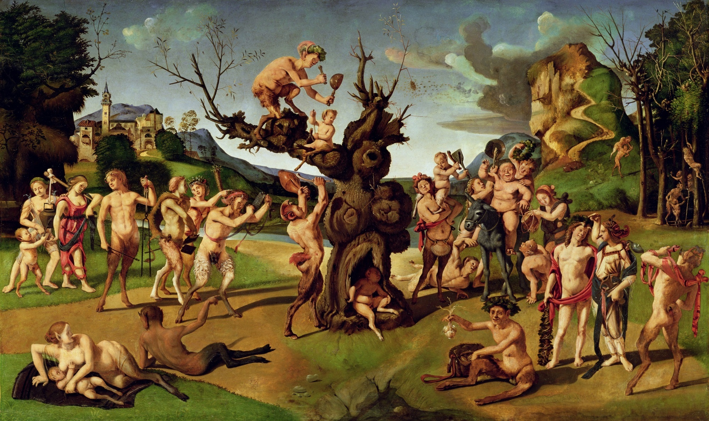
from On Truth and Lie in an Extra-Moral Sense
We have seen how it is originally language which works on the construction of concepts, a labor taken over in later ages by science. Just as the bee simultaneously constructs cells and fills them with honey, so science works unceasingly on this great columbarium of concepts, the graveyard of perceptions. It is always building new, higher stories and shoring up, cleaning, and renovating the old cells; above all, it takes pains to fill up this monstrously towering frame-work and to arrange therein the entire empirical world, which is to say, the anthropomorphic world. Whereas the man of action binds his life to reason and its concepts so that he will not be swept away and lost, the scientific investigator builds his hut right next to the tower of science so that he will be able to work on it and to find shelter for himself beneath those bulwarks which presently exist. And he requires shelter, for there are frightful powers which continuously break in upon him, powers which oppose scientific truth with completely different kinds of "truths" which bear on their shields the most varied sorts of emblems.
The drive toward the formation of metaphors is the fundamental human drive, which one cannot for a single instant dispense with in thought, for one would thereby dispense with man himself.
Friedrich Nietzsche, trans. W.A. Haussmann
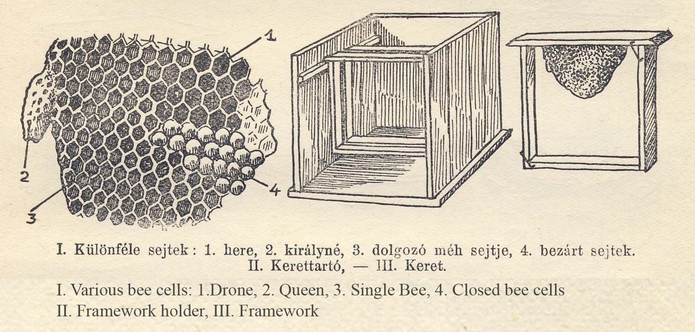
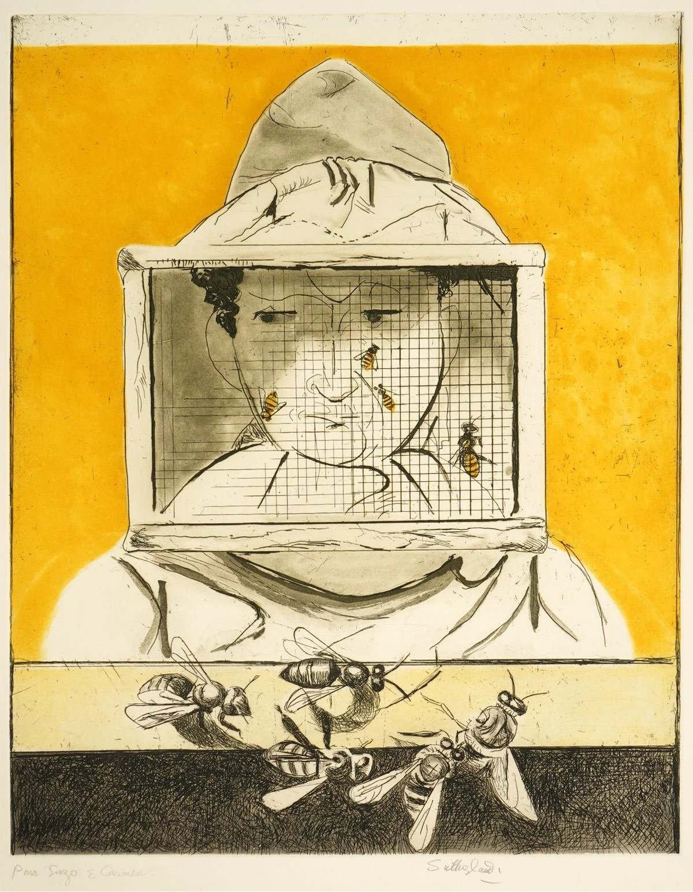
III. War Twixt Man and Bee
Sunday in October
The farmer, in the pride of sea-won acres,
Showed me his honey mill, the honey-gate.
Late afternoon was hazy on the land,
The sun was a warm gauzy providence.
The honey mill, the honey-gate. And then,
Near by, the bees. They came in from the fields,
The sun behind them, from the fields and trees,
Like soft banners, waving from the sea.
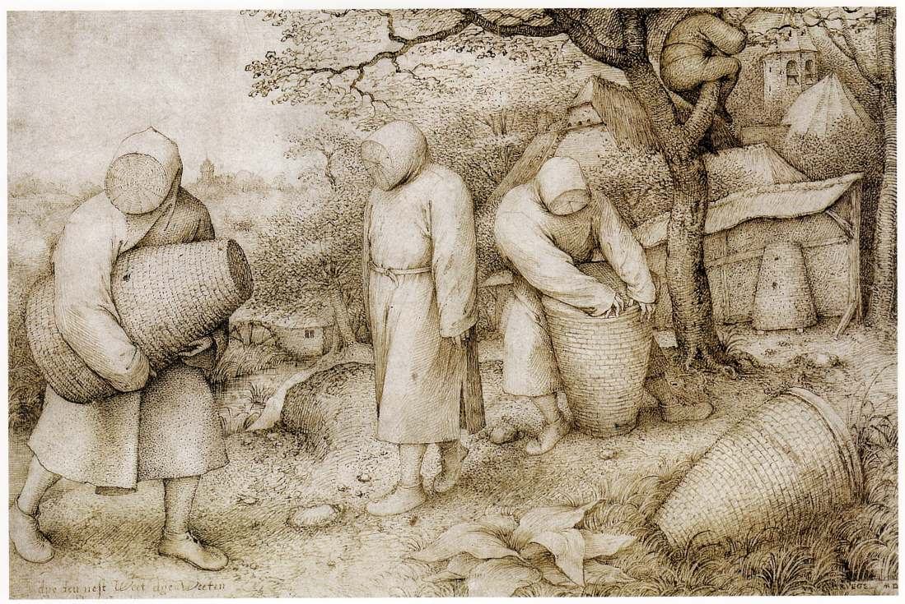
He told me of their thousands, their ways.
Of pounds of honey in the homely apiaries.
The stores were almost full, in Autumn air,
Against the coming chill, and the long cold.
He was about ready to rob them now,
The combs. He'd leave them just enough to keep them.
I thought it a rather subtle point he made,
Wishing Providence would be as sure of us.
Richard Eberhart
from Henry IV, pt. 2
KING
Where is the Crowne? Who took it from my Pillow?
WARWICK
When wee with-drew (my Liege) we left it here.
KING
The Prince hath ta'ne it hence: Go seek him out.
Is hee so hastie, that hee doth suppose
My sleepe, my death? Find him (my lord of Warwick)
Chide him hither: This part of his conioynes
With my disease, and helpes to end me.
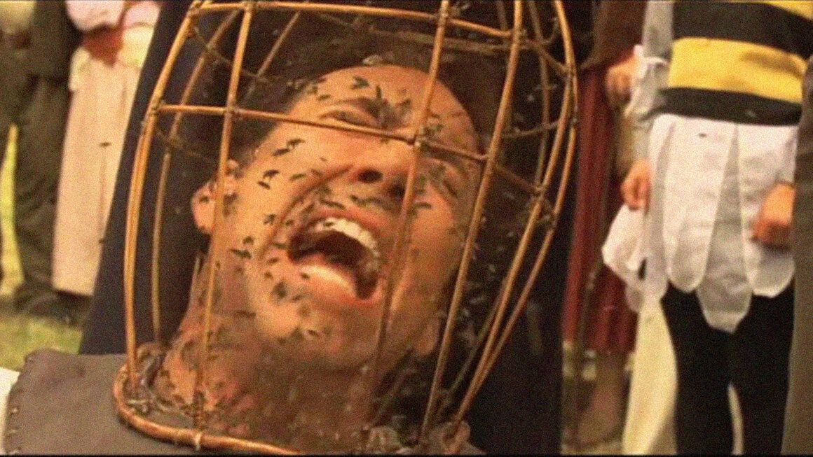
See Sonnes, what things you are,
How quickly Nature falls into reuolt,
When Gold becomes her Obiect?
For this, the foolish ouer-carefull Fathers
Haue broke their sleepes with thoughts,
Their braines with care, their bones with industry.
For this, they haue ingrossed and pyl'd vp
The cank'red heapes of strange-atchieued Gold;
For this they haue beene thoughtfull to inuest
Their Sonnes with Arts, and Martiall Exercises;
When, like the Bee, culling from euery flower
The vertuous Sweets, our Thighes packt with wax,
Our Mouthes with Honey, wee bring it to the Hiue;
And like the bees, Are murthered for our paines.
This bitter taste yields his engrossments,
To the ending father.
William Shakespeare
from Georgics IV.
Now, when thou hast decreed to seize their stores,
And by prerogative to break their doors,
With sprinkled water first the city choke,
And then pursue the citizens with smoke
Virgil, trans. John Dryden
from Annus Mirabilis 1666
At length the crackling noise & dreadful blaze
Call'd up some waking lover to the sight;
& long it was ere he the rest could raise,
Whose heavy eyelids yet were full of night.
The next to danger, hot pursued by fate,
Half cloth'd, half naked, hastily retire:
& frighted mothers strike their breasts, too late,
For helpless infants left amidst the fire.
Their cries soon waken all the dwellers near;
Now murmuring noises rise in every street;
The more remote run stumbling with their fear,
&, in the dark, men justle as they meet.
So weary bees in little cells repose;
But if night-robbers lift the well-stor'd hive,
An humming through their waxen city grows,
& out upon each other's wings they drive
John Dryden
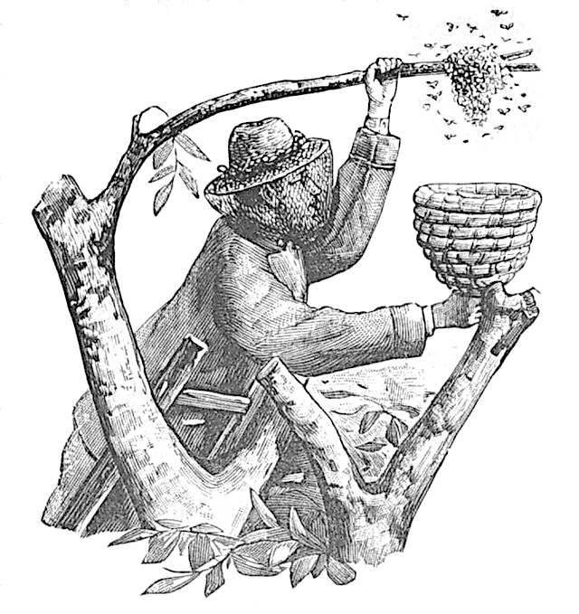
Wild Bees
Often in summer, on a tarred bridge plank standing,
Or downstream between willows, a safe Ophelia drifting
In a rented boat—I had seen them come & go,
Those wild bees swift as tigers, their gauze wings a-glitter
In passionless industry, clustering black at the crevice
Of a rotten cabbage tree, where their hive was hidden low.
But never strolled too near. Till one half-cloudy evening
Of ripe January, my friends & I
Came, gloved & masked to the eyes like plundering
desperadoes,
To smoke them out. Quiet beside the stagnant river
We trod wet grasses down, hearing the crickets chitter
& waiting for light to drain from the wounded sky.
Before we reached the hive their sentries saw us
& sprang invisible through the darkening air,
Stabbed, & died in stinging. The hive woke. Poisonous
fuming
Of sulphur filled the hollow trunk, & crawling
Blue flame sputtered—yet still their suicidal
Live raiders dived & clung to our hands & hair.
O it was Carthage under the Roman torches,
Or loud with flames & falling timber, Troy!
A job well botched. Half of the honey melted
& half the rest young grubs. Through earth-black
smouldering ashes
& maimed bees groaning, we drew out our plunder.
Little enough their gold, & slight our joy.
Fallen then the city of instinctive wisdom.
Tragedy is written distinct & small:
A hive burned on a cool night in summer.
But loss is a precious stone to me, a nectar
Distilled in time, preaching the truth of winter
To the fallen heart that does not cease to fall.
James K. Baxter
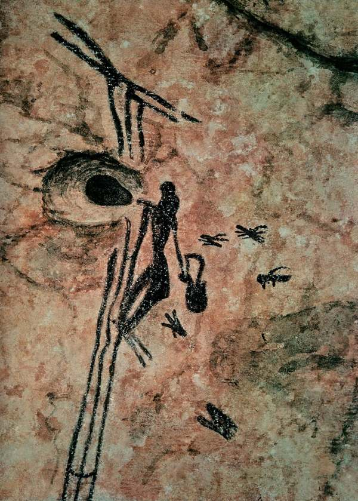
The Bee Meeting
Who are these people at the bridge to meet me? They are the villagers—
The rector, the midwife, the sexton, the agent for bees.
In my sleeveless summery dress I have no protection,
& they are all gloved & covered, why did nobody tell me?
They are smiling & taking out veils tacked to ancient hats.
I am nude as a chicken neck, does nobody love me?
Yes, here is the secretary of bees with her white shop smock
Buttoning the cuffs at my wrists & the slit from my neck to my knees.
Now I am milkweed silk, the bees will not notice.
They will not smell my fear, my fear, my fear.
Which is the rector now, is it that man in black?
Which is the midwife, is that her blue coat?
Everybody is nodding a square black head, they are knights in visors,
Breastplates of cheesecloth knotted under the armpits.
Their smiles & their voices are changing. I am led through a beanfield.
Strips of tinfoil winking like people,
Feather dusters fanning their hands in a sea of bean flowers,
Creamy bean flowers with black eyes & leaves like bored hearts.
Is it blood clots the tendrils are dragging up that string?
No, no, it is scarlet flowers that will one day be edible.
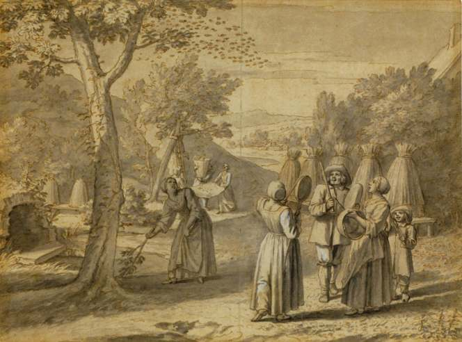
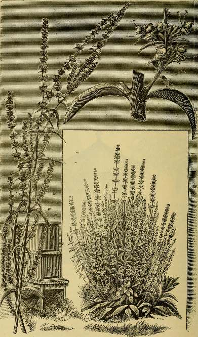
Now they are giving me a fashionable white straw Italian hat
& a black veil that molds to my face, they are making me one of them.
They are leading me to the shorn grove, the circle of hives.
Is it the hawthorn that smells so sick?
The barren body of hawthorn, etherizing its children.
Is it some operation that is taking place?
Is it the surgeon my neighbors are waiting for,
This apparition in a green helmet,
Shining gloves & white suit.
Is it the butcher, the grocer, the postman, someone I know?
I cannot run, I am rooted, & the gorse hurts me
With its yellow purses, its spiky armory.
I could not run without having to run forever.
The white hive is snug as a virgin,
Sealing off her brood cells, her honey, & quietly humming.
Smoke rolls & scarves in the grove.
The mind of the hive thinks this is the end of everything.
Here they come, the outriders, on their hysterical elastics.
If I stand very still, they will think I am cow-parsley,
A gullible head untouched by their animosity,
Not even nodding, a personage in a hedgerow.
The villagers open the chambers, they are hunting the queen.
Is she hiding, is she eating honey? She is very clever.
She is old, old, old, she must live another year, & she knows it.
While in their fingerjoint cells the new virgins
Dream of a duel they will win inevitably,
A curtain of wax dividing them from the bride flight,
The upflight of the murderess into a heaven that loves her.
The villagers are moving the virgins, there will be no killing.
The old queen does not show herself, is she so ungrateful?
I am exhausted, I am exhausted—
Pillar of white in a blackout of knives.
I am the magician's girl who does not flinch.
The villagers are untying their disguises, they are shaking hands.
Whose is that long white box in the grove, what have they accomplished, why am
I cold.
Sylvia Plath
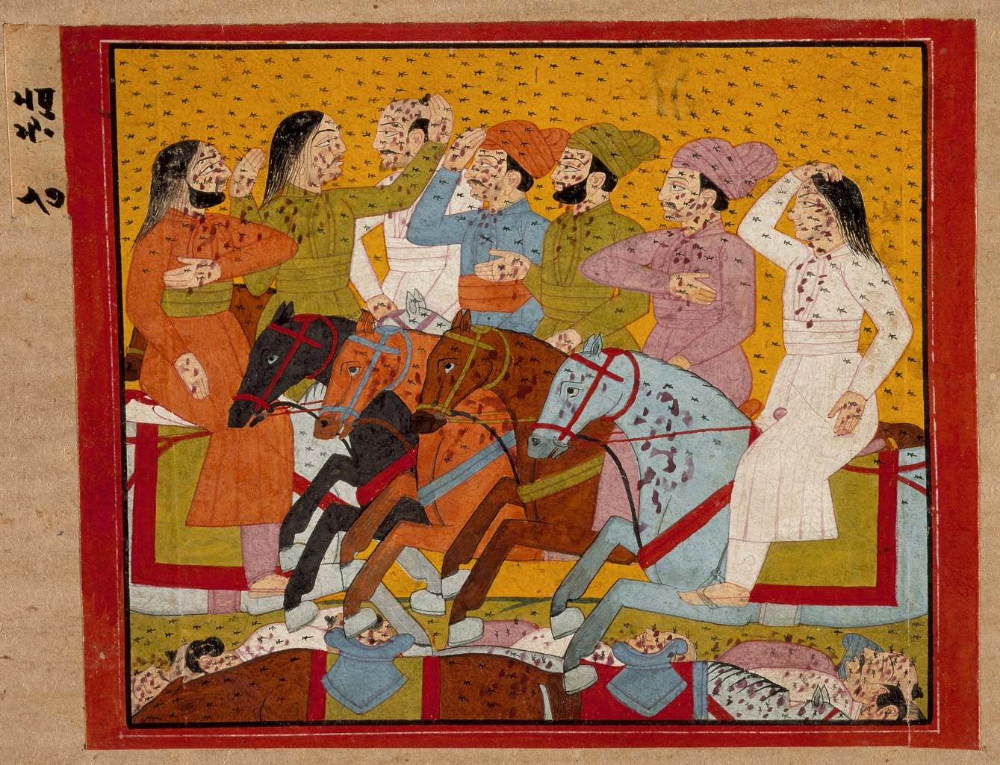
from Iliad II.
The other sceptre-bearing States arose too, and obey'd
The people's Rector. Being abroad, the earth was overlaid
With flockers to them, that came forth, as when of frequent bees
Swarms rise out of a hollow rock, repairing the degrees
Of their egression endlessly, with ever rising new
From forth their sweet nest; as their store, still as it faded, grew,
And never would cease sending forth her clusters to the spring,
They still crowd out so; this fleck here, that there, belabouring
The loaded flow'rs; so from the ships & tents the army's store
Troop'd to these princes & the court, along th' unmeasur'd shore;
Amongst whom, Jove's ambassadress, Fame, in her virtue shin'd,
Exciting greediness to hear. The rabble, thus inclin'd,
Hurried together; uproar seiz'd the high court; earth did groan
Beneath the settling multitude; tumult was there alone
Homer, trans. George Chapman
from Deuteronomy 1
And the Lord said unto me, Say unto them. Go not up, neither fight; for I am not among you; lest ye be smitten before your enemies. So I spake unto you; and ye would not hear, but rebelled against the commandment of the Lord, and went presumptuously up into the hill. And the Amorites, which dwelt in that mountain, came out against you, and chased you, as bees do, and destroyed you in Seir, even unto Hormah. And ye returned and wept before the Lord; but the Lord would not hearken to your voice, nor give ear unto you.
King James Version
from Psalm 118
It is better to trust in the Lord
than to put confidence in princes.
All nations compassed me about:
but in the name of the Lord will I destroy them.
They compassed me about;
yea, they compassed me about:
but in the name of the Lord I will destroy them.
They compassed me about like bees:
they are quenched as the fire of thorns:
for in the name of the Lord I will destroy them.
Thou hast thrust sore at me that I might fall:
but the Lord helped me
King James Version
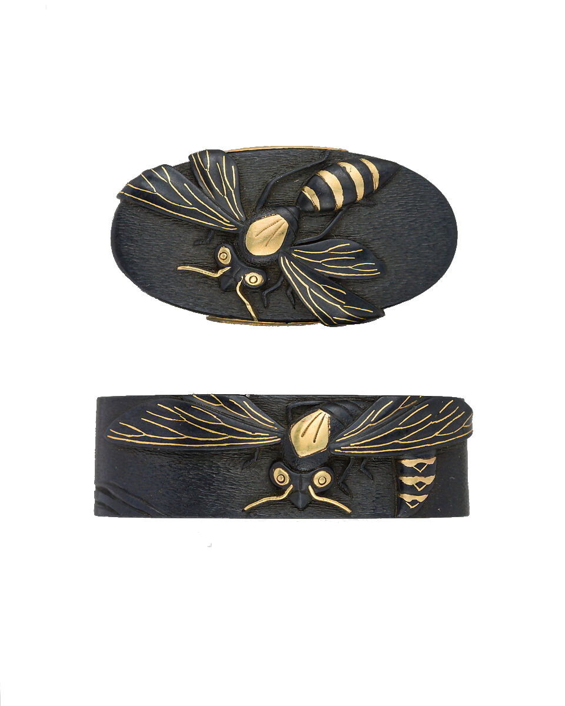
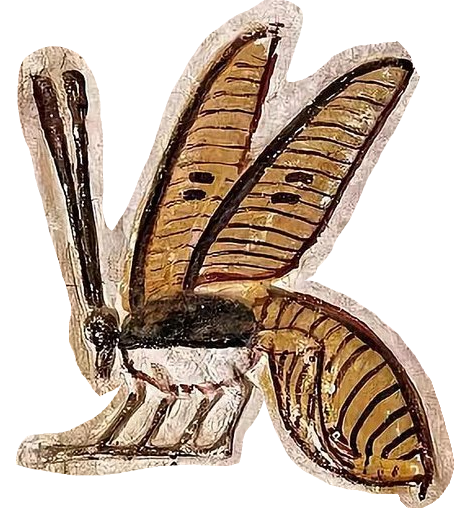
from Phaedo
I would ask you to be thinking of the truth and not of Socrates: agree with me, if I seem to you to be speaking the truth; or if not, withstand me might and main, that I may not deceive you as well as myself in my enthusiasm, and like the bee, leave my sting in you before I die.
Plato, trans. Benjamin Jowett
from Georgics IV.
Prone to revenge, the bees, a wrathful race,
When once provoked, assault the aggressor's face,
And through the purple veins a passage find;
There fix their stings, and leave their souls behind
Virgil, trans. John Dryden
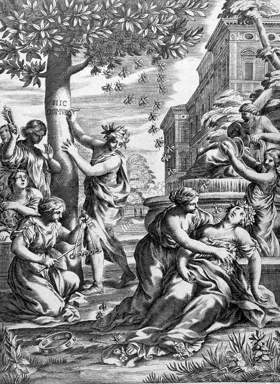
Anger
Anger in its time and place
May assume a kind of grace.
It must have some reason in it,
And not last beyond a minute.
If to further lengths it go,
It does into malice grow.
'Tis the difference that we see
Twixt the serpent and the bee.
If the latter you provoke,
It inflicts a hasty stroke.
Puts you to some little pain,
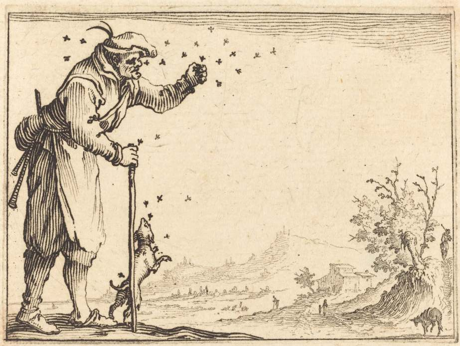
But it never stings again.
Close in tufted bush or brake
Lurks the poison-swelled snake
Nursing up his cherish'd wrath;
In the purlieux of his path,
In the cold, or in the warm,
Mean him good, or mean him harm,
Whensoever fate may bring you,
The vile snake will always sting you.
Charles & Mary Lamb
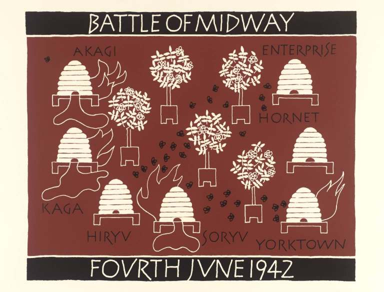
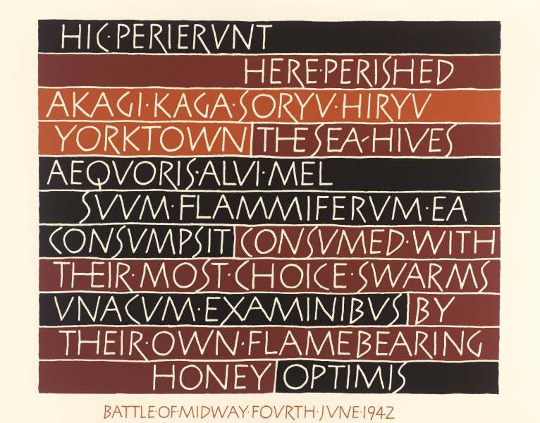
from Dead Man's Dump
None saw their spirits' shadow shake the grass,
Or stood aside for the half used life to pass
Out of those doomed nostrils and the doomed mouth,
When the swift iron burning bee
Drained the wild honey of their youth
Isaac Rosenberg
from In Parenthesis II.
John Ball stretched his neck to ease the pain of his valise-straps chafing, his eyes looked involuntarily, with his head's tilting. There spread before him on the blue warp above as though by a dexterous, rapid shuttling, unseen, from the nether-side, a patterning of intense white; each separate bright breaking through, sudden and with deliberate placing—a slow spreading out, a loss of compact form, drifting into an indeterminate mottling. He marvelled at these foreign clouds. There seemed in the whole air above but from no sensible direction, or point, a strong droning, as if a million bees were hiving to the stars.
David Jones
from Georgics IV.
But, if intestine broils alarm the hive,
(For two pretenders oft for empire strive,)
The vulgar in divided factions jar;
And murmuring sounds proclaim the civil war.
Inflamed with ire, and trembling with disdain,
Scarce can their limbs their mighty souls contain.
With shouts, the coward's courage they excite,
And martial clangors call them out to fight;
With hoarse alarms the hollow camp rebounds,
That imitate the trumpet's angry sounds;
Then to their common standard they repair;
The nimble horsemen scour the fields of air;
In form of battle drawn, they issue forth,
And every knight is proud to prove his worth.
Prest for their country's honour, and their king's,
On their sharp beaks they whet their pointed stings,
& exercise their arms, & tremble with their wings.
Full in the midst the haughty monarchs ride;
The trusty guards come up, and close the side;
With shouts the daring foe to battle is defied.
Thus, in the season of unclouded spring,
To war they follow their undaunted king,
Crowd through their gates, &, in the fields of light,
The shocking squadrons meet in mortal fight.
Headlong they fall from high, &, wounded, wound,
And heaps of slaughtered soldiers bite the ground.
Hard hailstones lie not thicker on the plain,
Nor shaken oaks such showers of acorns rain.
With gorgeous wings, the marks of sovereign sway,
The two contending princes make their way;
Intrepid through the midst of danger go,
Their friends encourage and amaze the foe.
With mighty souls in narrow bodies prest,
They challenge, and encounter breast to breast;
So fixed on fame, unknowing how to fly,
And obstinately bent to win or die,
That long the doubtful combat they maintain,
Till one prevails—for one can only reign.
Yet all these dreadful deeds, this deadly fray,
A cast of scattered dust will soon allay,
And undecided leave the fortune of the day.
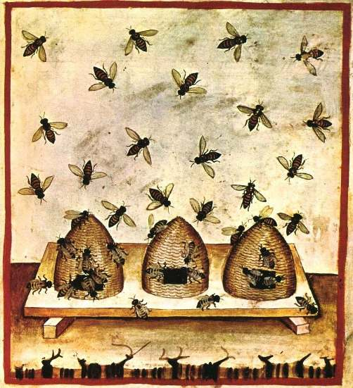
When both the chiefs are sundered from the fight,
Then to the lawful king restore his right;
And let the wasteful prodigal be slain,
That he, who best deserves, alone may reign.
With ease distinguished is the regal race:
One monarch wears an honest open face;
Shaped to his size, and godlike to behold,
His royal body shines with specks of gold,
And ruddy scales; for empire he designed,
Is better born, and of a nobler kind.
That other looks like nature in disgrace:
Gaunt are his sides, and sullen is his face;
& like their grisly prince appear his gloomy race,
Grim, ghastly, rugged, like a thirsty train
That long have travelled through a desert plain,
& spit from their dry chaps the gathered dust again.
The better brood, unlike the bastard crew,
Are marked with royal streaks of shining hue;
Glittering and ardent, though in body less:
From these, at pointed seasons, hope to press
Huge heavy honeycombs, of golden juice,
Not only sweet, but pure, and fit for use,
To allay the strength and hardness of the wine,
And with old Bacchus new metheglin join.
But, when the swarms are eager of their play,
And loath their empty hives, and idly stray,
Restrain the wanton fugitives, and take
A timely care to bring the truants back.
The task is easy—but to clip the wings
Of their high-flying arbitrary kings.
At their command, the people swarm away:
Confine the tyrant, and the slaves will stay
Virgil, trans. John Dryden
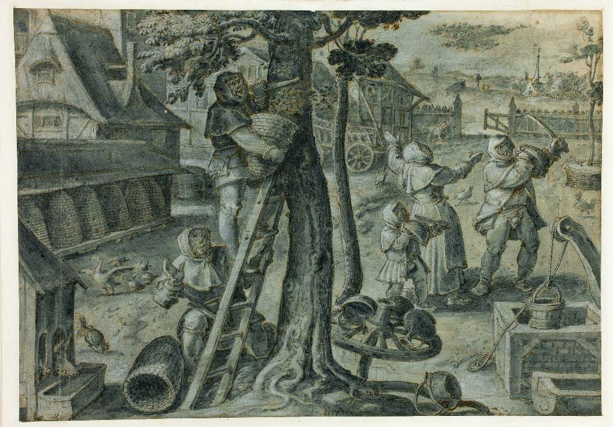
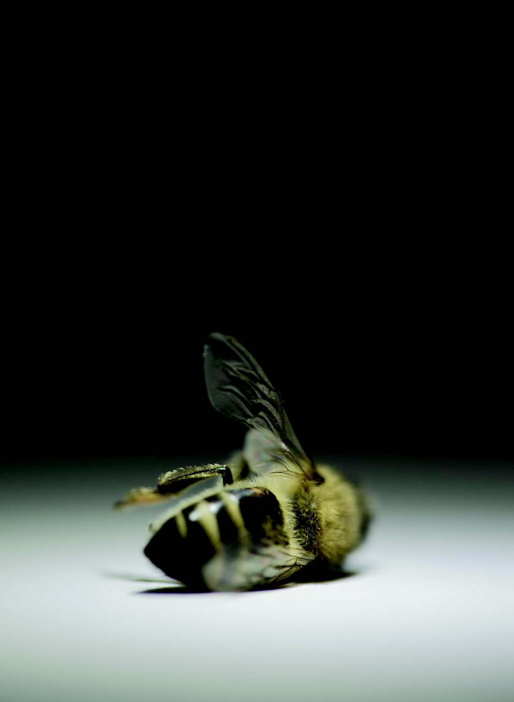
IV. Death of the Old Hive
Charm
Against a bee-swarm, throw some earth with your right hand down under your right foot, & say:
I catch it under foot | I may have found it.
Listen, this earth can avail | against every creature
& against its opponent | & against the lack of care
& against the greatness | of the human tongue.
And against it cast away over the gravel, when they make a swarm, & speak:
Sit down, victorious lady, | sink to the earth!
Never would you fly | into the woods.
Be so mindful | of my good,
As is every man | of food & his home.
anon. Anglo-Saxon poet, trans. ed.
Melissomelos, or, the Bee's Madrigal
As of all states the Monarchy is best,
So of all Monarchies the Feminine,
Of famous Amazons excels the rest,
That on this earthly Sphere have ever been,
Whose little hearts in weaker sex
(so great in field)
No powers of the mightiest Males
can make to yield:
They living aye, most sober and most chaste,
Their pain-got goods in pleasures scorn to waste.
They work in common for the common weal:
Their labour's restless to maintain their state:
Their Hexagonia no Bezaleel,
For curious Art may pass, or imitate,
One Sovereign and but one commands
this people loyal,
The great Marpesse with plenty blest
of issue royal:
Antiope, and Orithyia fair,
With other princes her Infantes are.
When so increased is this prudent Nation,
That their own limits cannot them suffice;
To seek new Cities, for new habitation,
They send abroad their numerous Colonies:
Antiope the prime Prince gone,
Orithyia soon
Of her Queen-mother, making moan,
begs the like boon
That with her train her fortune she may seek:
And this she sings in measures mournful sweet.
To whose grave accents if her Princely Grace
Vouchsafe with Trine Aspect reply to make,
To sweetest Treble tuning sweeter Bass:
Her mournful suit a joyful end doth take:
And then, when fit time they espy,
Some thousands strong
This army royal gallantly
Doth march along.
Hark, hark, me thinks I hear in notes of choice,
This fairest lady's sweetest mournful voice.
But all this while she doth chant it alone,
Most humbly begging in her doric strains,
Of her dear liege leave to be gone,
But comfort none she yet obtains.
Her mother's silence makes her much to doubt,
Her grace unto her will this grace deny:
But still her suit she doth hold out,
In home at last to move pity.
Importunate Orithya now hath won
Her stern Queen-Mother's grant to her desire:
For joy, her sisters all as one
With cheerful tones fill up the choir.
These ladies musical comfort assures
The prince her much-desire Sovereignty.
The vulgar, when occasion serves,
(This watch-word past) abroad do hie,
Where treading the hay, right nimbly they prance,
Thus waiting their Prince in and out they trace:
Who come, these maids the Morris dance,
Along unto their resting-place.
Charles Butler
from Judges 14
Then went Samson down, and his father and his mother, to Timnath, and came to the vineyards of Timnath: and, behold, a young lion roared against him. And the Spirit of the Lord came mightily upon him, and he rent him as he would have rent a kid, and he had nothing in his hand: but he told not his father or his mother what he had done. And he went down, and talked with the woman; and she pleased Samson well.
And after a time he returned to take her, and he turned aside to see the carcase of the lion: and, behold, there was a swarm of bees and honey in the carcase of the lion. And he took thereof in his hands, and went on eating, and came to his father and mother, and he gave them, and they did eat: but he told not them that he had taken the honey out of the carcase of the lion.
So his father went down unto the woman: and Samson made there a feast; for so used the young men to do. And it came to pass, when they saw him, that they brought thirty companions to be with him.
And Samson said unto them, I will now put forth a riddle unto you: if ye can certainly declare it me within the seven days of the feast, and find it out, then I will give you thirty sheets and thirty change of garments: But if ye cannot declare it me, then shall ye give me thirty sheets and thirty change of garments. And they said unto him, Put forth thy riddle, that we may hear it.
And he said unto them, Out of the eater came forth meat, and out of the strong came forth sweetness. And they could not in three days expound the riddle.
And it came to pass on the seventh day, that they said unto Samson's wife, Entice thy husband, that he may declare unto us the riddle, lest we burn thee and thy father's house with fire: have ye called us to take that we have? is it not so? And Samson's wife wept before him, and said, Thou dost but hate me, and lovest me not: thou hast put forth a riddle unto the children of my people, and hast not told it me. And he said unto her, Behold, I have not told it my father nor my mother, and shall I tell it thee? And she wept before him the seven days, while their feast lasted: and it came to pass on the seventh day, that he told her, because she lay sore upon him: and she told the riddle to the children of her people.
And the men of the city said unto him on the seventh day before the sun went down, What is sweeter than honey? and what is stronger than a lion? And he said unto them, If ye had not plowed with my heifer, ye had not found out my riddle.
King James Version
from Georgics IV.
But, if the labouring kind be wholly lost,
And not to be retrieved with care or cost;
'Tis time to touch the precepts of an art,
The Arcadian master did of old impart;
And how he stocked his empty hives again,
Renewed with putrid gore of oxen slain.
An ancient legend I prepare to sing,
And upward follow Fame's immortal spring:—
For, where with seven-fold horns mysterious Nile
Surrounds the skirts of Egypt's fruitful isle,
And where in pomp the sun-burnt people ride,
On painted barges, o'er the teeming tide,
Which, pouring down from Ethiopian lands,
Makes green the soil with slime, & black prolific sands—
That length of region, and large tract of ground,
In this one art a sure relief have found.
First, in a place by nature close, they build
A narrow flooring, guttered, walled, and tiled.
In this, four windows are contrived, that strike,
To the four winds opposed, their beams oblique.
A steer of two years old they take, whose head
Now first with burnished horns begins to spread:
They stop his nostrils, while he strives in vain
To breathe free air, and struggles with his pain.
Knocked down, he dies: his bowels, bruised within,
Betray no wound on his unbroken skin.
Extended thus, in this obscene abode
They leave the beast; but first sweet flowers are strowed
Beneath his body, broken boughs and thyme,
And pleasing cassia just renewed in prime.
This must be done, ere spring makes equal day,
When western winds on curling waters play;
Ere painted meads produce their flowery crops,
Or swallows twitter on the chimney-tops.
The tainted blood, in this close prison pent,
Begins to boil, and through the bones ferment.
Then (wonderous to behold) new creatures rise,
A moving mass at first, and short of thighs;
'Till, shooting out with legs, and imp'd with wings,
The grubs proceed to bees with pointed stings;
And, more and more affecting air, they try
Their tender pinions, and begin to fly:
At length, like summer storms from spreading clouds,
That burst at once, and pour impetuous floods—
Or flights of arrows from the Parthian bows,
When from afar they gall embattled foes—
With such a tempest through the skies they steer,
And such a form the winged squadrons bear
Virgil, trans. John Dryden

The Bees and the Flies
A Farmer of the Augustan Age
Perused in Virgil's golden page
The story of the secret won
From Proteus by Cyrene's son—
How the dank sea-god showed the swain
Means to restore his hives again.
More briefly, how a slaughtered bull
Breeds honey by the bellyful.
The egregious rustic put to death
A bull by stopping of its breath,
Disposed the carcass in a shed
With fragrant herbs and branches spread,
And, having well performed the charm,
Sat down to wait the promised swarm.
Nor waited long. The God of Day
Impartial, quickening with his ray
Evil and good alike, beheld
The carcass—and the carcass swelled.
Big with new birth the belly heaves
Beneath its screen of scented leaves.
Past any doubt, the bull conceives!
The farmer bids men bring more hives
To house the profit that arrives;
Prepares on pan and key and kettle,
Sweet music that shall make 'em settle;
But when to crown the work he goes,
Gods! What a stink salutes his nose!
Where are the honest toilers? Where
The gravid mistress of their care?
A busy scene, indeed, he sees,
But not a sign or sound of bees.
Worms of the riper grave unhid
By any kindly coffin-lid,
Obscene and shameless to the light,
Seethe in insatiate appetite,
Through putrid offal, while above
The hissing blow-fly seeks his love,
Whose offspring, supping where they supt,
Consume corruption twice corrupt.
Rudyard Kipling
Bestiaries Are Out
A sweet tooth taught us to admire
The bees before we'd made a fire:
Nemorivagrant tribes at least
Could serve wild honey at a feast.
Accustomed in hard times to clem,
We started soon to envy them
An industry that stocks their shelves
With more food than they need themselves.
By Estimation, too, inclined
Towards a social stead of kind,
We sought from study of their hives
To draw some moral for our lives,
And when conspiracy, revolt,
Gave Princes of this world a jolt,
Philosopher and Christian Preacher
Upheld the Bee as Civics Teacher.
Now bestiaries are out, for now
Research has demonstrated how
They actually behave, they strike us
As being horridly unlike us:
Though some believe (and even plan
To do it) that from Urban Man,
By Advertising plus the aid
Of drugs, an insect might be made:
No. Who can learn to love his neighbor
From neuters whose one love is labor,
To rid his Government of knaves
From commonwealths controlled by slaves?
How, for us children of the word,
Anthropomorphic and absurd
To ask what code they satisfy
When they swoop out to sting and die
Or what catharsis undergo
When they put on their biggest show,
A duel to the death between
A tooting and a quacking Queen.
W.H. Auden
from Epistle II. To A Socialist in London
But what if I unveil the figure that closely beside you
Half hides his Hell-charred skeleton with mysteries obscene,
That foul one, that Moloch of all Utopias, ancient
Poisoner & destroyer-elect of innumerous unborn?
Know you the story of our hive-bees, the yellow honey-makers,
Whose images from of old have haunted Pōetry, settling
On the blossoms of man's dream-garden, as on the summer-flow'rs,
Pictures of happy toil, sunny glances, gendering always
Such sweet thoughts, as be by slumbrous music awaken'd?
How all their outward happiness,—that fairy demeanour
Of busy contentment, singing at their work,—is an inborn
Empty habit, the relics of a time when considerate joy
Truly possest their tiny bodies; when golden abundance
Was not a State-kept hoard; when feasts were plentiful indulg'd
With wine well-fermented, or old-stored spicy metheglin:
For they died not then miserably within the second moon
Forgotten, unrespected of all; but slept many winters,
Saw many springs, liv'd, lov'd like men, consciously rejoicing
In Nature's promises, with like hopes and recollections.
Intelligence had brought them Scīence, Genius enter'd;
Seers and sages arose, great Bees, perfecting among them
Copious inventions, with man's art worthily compared.
Then was a time when that, which haps not in ages of ages,
Strangely befel: they stole from Nature's secresy one key,
Found the hidden motive which works to varīety of kind;
And thus came wondrously possest of pow'r to determine
Their children's qualities, habitudes, yea their specialized form
Masculine or feminine to produce, or asexual offspring
Redow'rd and differenced with such alternative organs
As they chose, to whate'er preferential function adapted,
Wax-pocket or honey-bag, with an instinct rightly acordant.
We know well the result, but not what causes effected
Their decision to prefer so blindly the race to the unit,
As to renounce happiness for a problem, a vain abstraction;
Making home and kingdom a vast egg-factory, wherein
Food and life are stor'd up alike, and strictly proportion'd
In loveless labour with mean anxīety. Wondrous
Their reason'd motive, their altrūistic obedience
Unto a self-impos'd life-sentence of prison or toil.
Wonder wisely! then ask if these ingenious insects,
(Who made Natur' against her will their activ' acomplice,
And, methodizing anew her heartless system, averted
From their house the torrent of whelming natural increase,)
Are blood-guiltless among their own-born prógeny: What skill
Keeps their peace, or what price buys it? Alack! 'tis murder,
Murder again. No worst Oriental despot, assuring
'Gainst birthright or faction or envy his ill-gotten empire,
So decimates his kin, as do these rown-bodied egg-queens
Surprise competitors, and stab their slumbering infants,
Into the wax-cradles replunging their double-edged stings.
Or what a deed of blood some high-day, when the summer hath
Their clammy cells o'erbrim'd, and already ripening orchards
And late flow'rs proclaim that starving winter approacheth,
Nor will again any queen lead forth her swarm, dispeopling
Their strawbuilt citadel; then watch how these busy workers
Cease for awhile from toil; how crowding upon the devoted
Drones they fall; those easy fellows gave some provocation;
Yet 'tis a foul massacre, cold murder of unsuspecting
Life-long companions; and done bloodthirstily:—is not
Exercise of pow'r a delight? have yóu not a doctrine
That calls duty pleasure? What an if they make merry, saying
'Lazy-livers, runagates, evil beasts, greedy devourers,
'Too happy and too long ye've liv'd, unashamed to have outliv'd
'Your breeders, feeders, warmers and toiling attendants;
'Had-ye ever been worthy a public good to accomplish,
'Each had nobly perish'd long-ago. Unneeded, obese ones,
'Impious encumbrance, whose hope of service is over,
'Who did not, now can not, assist the community, Ye die!'
Robert Bridges

Nineteen Hundred and Nineteen I.
Many ingenious lovely things are gone
That seemed sheer miracle to the multitude,
protected from the circle of the moon
That pitches common things about. There stood
Amid the ornamental bronze and stone
An ancient image made of olive wood—
And gone are Phidias' famous ivories
And all the golden grasshoppers and bees.
We too had many pretty toys when young:
A law indifferent to blame or praise,
To bribe or threat; habits that made old wrong
Melt down, as it were wax in the sun's rays;
Public opinion ripening for so long
We thought it would outlive all future days.
O what fine thought we had because we thought
That the worst rogues and rascals had died out.
All teeth were drawn, all ancient tricks unlearned,
And a great army but a showy thing;
What matter that no cannon had been turned
Into a ploughshare? Parliament and king
Thought that unless a little powder burned
The trumpeters might burst with trumpeting
And yet it lack all glory; and perchance
The guardsmen's drowsy chargers would not prance.
Now days are dragon-ridden, the nightmare
Rides upon sleep: a drunken soldiery
Can leave the mother, murdered at her door,
To crawl in her own blood, and go scot-free;
The night can sweat with terror as before
We pieced our thoughts into philosophy,
And planned to bring the world under a rule,
Who are but weasels fighting in a hole.
He who can read the signs nor sink unmanned
Into the half-deceit of some intoxicant
From shallow wits; who knows no work can stand,
Whether health, wealth or peace of mind were spent
On master-work of intellect or hand,
No honour leave its mighty monument,
Has but one comfort left: all triumph would
But break upon his ghostly solitude.
But is there any comfort to be found?
Man is in love and loves what vanishes,
What more is there to say? That country round
None dared admit, if such a thought were his,
Incendiary or bigot could be found
To burn that stump on the Acropolis,
Or break in bits the famous ivories
Or traffic in the grasshoppers or bees.
William Butler Yeats
from Georgics IV.
Thus though the race of life they quickly run,
Which in the space of seven short years is done,
The immortal line in sure succession reigns;
The fortune of the family remains,
And grandsires' grandsires the long list contains.
Besides, not Egypt, India, Media, more,
With servile awe, their idol king adore:
While he survives, in concord and content
The commons live, by no divisions rent;
But the great monarch's death dissolves the government.
All goes to ruin; they themselves contrive
To rob the honey, and subvert the hive
Virgil, trans. John Dryden
from Cawdor X.
The vivid consciousness
That waking or dreaming, its twenty years, infallibly
Felt itself unitary, was now divided:
Like the dispersion of a broken hive: the brain-cells
And rent fragments of cells finding
After their communal festival of life particular deaths
Robinson Jeffers
1115
The murmuring of Bees, has ceased
But murmuring of some
Posterior, prophetic,
Has simultaneous come.
The lower metres of the Year
When Nature's laugh is done –
The Revelations of the Book
Whose Genesis was June
Appropriate Creatures to her change
The Typic Mother sends –
As Accent fades to interval
With separating Friends
Till what we speculate, has been
And thoughts we will not show
More intimate with us become
Than Persons, that we know.
Emily Dickinson
V. Burden of Persuasion
A Time of Bees
"Love is never strong enough to find the words befitting it." —Camus
All day my husband pounds on the upstairs porch.
Screeches and grunts of wood as the wall is opened
keep the whole house tormented. He is trying to reach
the bees, he is after bees. This is the climax, an end
to two summers of small operations with sprays and ladders.
Last June on the porch floor I found them dead,
a sprinkle of dusty bugs, and next day a still worse
death, until, like falling in love, bee-haunted,
I swept up bigger and bigger loads of some hatch,
I thought, sickened, and sickening me, from what origin?
My life centered on bees, all floors were suspect. The search
was hopeless. Windows were shut. I never find
where anything comes from. But in June my husband's fierce
sallies began, inspections, cracks located
and sealed, insecticides shot; outside, the bees' course
watched, charted; books on bees read.
I tell you I swept up bodies every day on the porch.
Then they'd stop, the problem was solved; then they were there
again,
as the feelings make themselves known again, as they beseech
sleepers who live innocently in will and mind.
It is no surprise to those who walk with their tigers
that the bees were back, no surprise to me. But they had
left themselves so lack-luster, their black and gold furs
so deathly faded. Gray bugs that the broom hunted
were like a thousand little stops when some great lurch
of heart takes place, or a great shift of season.
November it came to an end. No bees. And I could watch
the floor, clean and cool, and, from windows, the cold land.
But this spring the thing began again, and his curse
went upstairs again, and his tinkering and reasoning and pride.
It is the man who takes hold. I lived from bees, but his force
went out after bees and found them in the wall where they hid.
And now in July he is tearing out the wall, and each
board ripped brings them closer to his hunting hand.
It is quiet, has been quiet for a while. He calls me, and I march
from a dream of bees to see them, winged and unwinged,
such a mess of interrupted life dumped on newspapers—
dirty clots of grubs, sawdust, stuck fliers, all smeared
together with old honey, they writhe, some of them, but who cares?
They go to the garbage, it is over, everything has been said.
But there is more. Wouldn't you think the bees had suffered
enough? This evening we go to a party, the breeze
dies, late, we are sticky in our old friendships and light-headed.
We tell our funny story about the bees.
At two in the morning we come home, and a friend,
a scientist, comes with us, in his car. We're going to save
the idea of the thing, a hundred bees, if we can find
so many unrotted, still warm but harmless, and leave
the rest. We hope that the neighbors are safe in bed,
taking no note of these private catastrophes.
He wants an enzyme in the flight-wing muscle. Not a bad
thing to look into. In the night we rattle and raise
the lid of the garbage can. Flashlights in hand,
we open newspapers, and the men reach in a salve
of happenings. I can't touch it. I hate the self-examined
who've killed the self. The dead are darker, but the others have
moved in the ooze toward the next moment. My God
one half-worm gets its wings right before our eyes.
Searching fingers sort and lay bare, they need
the idea of bees—& yet, under their touch, the craze
for life gets stronger in the squirming, whitish kind.
The men do it. Making a claim on the future, as love
makes a claim on the future, grasping. & I, underhand,
I feel it start, a terrible, lifelong heave
taking direction. Unpleading, the men prod
till all that grubby softness wants to give, to give.
Mona van Duyn
from Kalevala XV.
"Tiny bee, thou honey-birdling,
Lord of all the forest flowers,
Fly away and gather honey,
Bring to me the forest-sweetness,
Found in Metsola's rich gardens,
And in Tapio's fragrant meadows,
From the petals of the flowers,
From the blooming herbs and grasses,
Thus to heal my hero's anguish,
Thus to heal his wounds of evil."
Thereupon the honey-birdling
Flies away on wings of swiftness,
Into Metsola's rich gardens,
Into Tapio's flowery meadows,
Gathers sweetness from the meadows,
With the tongue distills the honey
From the cups of seven flowers,
From the bloom of countless grasses;
Quick from Metsola returning,
Flying, humming, darting onward,
With his winglets honey-laden,
With the store of sweetest odors,
To the mother brings the balsam
Elias Lönnrot, trans. John Martin Crawford
319
The nearest Dream recedes – unrealized –
The Heaven we chase,
Like the June Bee – before the School Boy,
Invites the Race –
Stoops – to an easy Clover –
Dips – evades – teases – deploys –
Then – to the Royal Clouds
Lifts his light Pinnace –
Heedless of the Boy –
Staring – bewildered – at the mocking sky –
Homesick for steadfast Honey –
Ah, the Bee flies not
That brews that rare variety!
Emily Dickinson
The Word
Then, when God bent His face
over the shining new world, then
they stopped the sun with a word,
a word burned cities to the ground.
When a word floated across the sky
like a rose-colored flame
eagles closed their wings, frightened
stars shrank against the moon.
But we worry about other things, and forget
that only the word glows and shines,
and the Gospel of John
tells us this word is God.
We've surrounded it with a wall,
with the narrow borders of this world,
and like bees in a deserted hive
the dead words rot and stink.
Nikolay Gumilev, trans. Alla Burago & Burton Raffel

from Midwinter Madness
A month or twain to live on honeycomb
Is pleasant—but to eat it for a year
Is simply beastly. Thus the poet spake,
Feeling how sticky all his stomach was
With hivings of ten thousand cheated bees.
O wisdom that could shape immortal words
And frame a diet for dyspeptic man!
Edward Shanks
from Pericles, Prince of Tyre
THIRD FISHERMAN
We would purge the land of these Drones, that robbe the Bee of her Hony.
William Shakespeare
50
I haven't told my garden yet –
Lest that should conquer me.
I haven't quite the strength now
To break it to the Bee –
I will not name it in the street
For shops would stare at me –
That one so shy – so ignorant
Should have the face to die.
The hillsides must not know it –
Where I have rambled so –
Nor tell the loving forests
The day that I shall go –
Nor lisp it at the table –
Nor heedless by the way
Hint that within the Riddle
One will walk today –
Emily Dickinson
Telling the Bees
Here is the place; right over the hill
Runs the path I took;
You can see the gap in the old wall still,
And the stepping-stones in the shallow brook.
There is the house, with the gate red-barred,
And the poplars tall;
And the barn's brown length, and the cattle-yard,
And the white horns tossing above the wall.
There are the beehives ranged in the sun;
And down by the brink
Of the brook are her poor flowers, weed-o'errun,
Pansy and daffodil, rose and pink.
I can see it all now,—the slantwise rain
Of light through the leaves,
The sundown's blaze on her window-pane,
The bloom of her roses under the eaves.
Just the same as a month before,—
The house and the trees,
The barn's brown gable, the vine by the door,—
Nothing changed but the hives of bees.
Before them, under the garden wall,
Forward and back,
Went drearily singing the chore-girl small,
Draping each hive with a shred of black.
Trembling, I listened: the summer sun
Had the chill of snow;
For I knew she was telling the bees of one
Gone on the journey we all must go!
Then I said to myself, "My Mary weeps
For the dead to-day:
Haply her blind old grandsire sleeps
The fret and the pain of his age away."
But her dog whined low; on the doorway sill,
With his cane to his chin,
The old man sat; and the chore-girl still
Sung to the bees stealing out and in.
And the song she was singing ever since
In my ear sounds on:—
"Stay at home, pretty bees, fly not hence!
Mistress Mary is dead and gone!"
John Greenleaf Whittier
The Bee-Boy's Song
Bees! Bees! Hark to your bees!
"Hide from your neighbours as much as you please,
But all that has happened, to us you must tell,
Or else we will give you no honey to sell!"
A maiden in her glory,
Upon her wedding-day,
Must tell her Bees the story,
Or else they'll fly away.
Fly away—die away—
Dwindle down and leave you!
But if you don't deceive your Bees,
Your Bees will not deceive you.
Rudyard Kipling
Julius Caesar and the Honey-Bee
Poring on Cæsar's death with earnest eye,
I heard a fretful buzzing in the pane:
'Poor bee!' I cried, 'I'll help thee by-and-by;'
Then dropp'd mine eyes upon the page again.
Alas! I did not rise; I help'd him not:
In the great voice of Roman history
I lost the pleading of the window-bee,
And all his woes and troubles were forgot.
I could not change the Roman's destiny;
I might have set the honey-maker free.
Charles Tennyson Turner
Love, Pride and Forgetfulness
Ere yet my heart was sweet Love's tomb,
Love laboured honey busily.
I was the hive and Love the bee,
My heart the honey-comb.
One very dark and chilly night
Pride came beneath and held a light.
The cruel vapours went through all,
Sweet Love was withered in his cell;
Pride took Love's sweets, and by a spell,
Did change them into gall;
And Memory tho' fed by Pride
Did wax so thin on gall,
Awhile she scarcely lived at all,
What marvel that she died?
Alfred, Lord Tennyson
from Sermon on third Sunday after Trinity
Penitents ought to do as the bees, who, when their king flies from the hive, fly with him, & crowd closely round him—he in the middle, and they on every side; and when the king can fly no longer, the company of bees carries him; and if he dies, they all die together with him. Christ, our King, flew to us from the hive, that is to say, from the bosom of the Father, whom we ought to follow like good bees, & to fly with Him, & to place Him, that is, His faith, in the midst of us, that is, in our hearts. And if any one of His members shall have fallen into sin, we ought to support & bear him up, and to die with Christ crucified & dying, crucifying our own flesh, with its affections & lusts.
St. Anthony of Padua
from Sermon in Octave of Easter
All of you [baptized] who stand fast in the Lord are a holy seed, a new colony of bees, the very flower of our ministry and fruit of our toil, my joy and my crown.
St. Augustine of Hippo
from The Spirit of Prayer
For nothing is in vain, or without Profit, to the humble Soul; like the Bee, it takes its Honey even from bitter Herbs; it stands always in a State of Divine Growth; and every thing that falls upon it, is like a Dew of Heaven to it.
William Law

from The Marriage of Heaven and Hell: The Argument
Roses are planted where thorns grow,
And on the barren heath
Sing the honey bees
William Blake
Meditations in Time of Civil War VI.
The Stare's Nest by My Window
The bees build in the crevices
Of loosening masonry, and there
The mother birds bring grubs and flies.
My wall is loosening; honey-bees,
Come build in the empty house of the stare.
We are closed in, and the key is turned
On our uncertainty; somewhere
A man is killed, or a house burned,
Yet no clear fact to be discerned:
Come build in the empty house of the stare.
A barricade of stone or of wood;
Some fourteen days of civil war;
Last night they trundled down the road
That dead young soldier in his blood:
Come build in the empty house of the stare.
We had fed the heart on fantasies,
The heart's grown brutal from the fare;
More substance in our enmities
Than in our love; O honey-bees,
Come build in the empty house of the stare.
William Butler Yeats
Happiness
I have been taught never to brag but now
I cannot help it: I keep
a beautiful garden, all abundance,
indiscriminate, pulling itself
from the stubborn earth: does it offend you
to watch me working in it,
touching my hands to the greening tips or
tearing the yellow stalks back, so wild
the living and the dead both
snap off in my hands?
I can stand for hours among the sweet
narcissus, silent as a point of bone.
I can wait longer than sadness. I can wait longer
than your grief. It is such a small thing
to be proud of, a garden. Today
there were scrub jays, quail,
a woodpecker knocking at the white-
and-black shapes of trees, and someone's lost rabbit
scratching under the barberry: is it
indiscriminate? Should it shrink back, wither,
and expurgate? Should I, too, not be loved?
It is only a little time, a little space.
Why not watch the grasses take up their colors in a rush
like a stream of kerosene being lit?
If I could not have made this garden beautiful
I wouldn't understand your suffering,
nor care for each the same, inflamed way.
I would have to stay only like the bees,
beyond consciousness, beyond
self-reproach, fingers dug down hard
into stone, and growing nothing.
There is no end to ego,
with its museum of disappointments.
I want to take my neighbors into the garden
and show them: Here is consolation.
Here is your pity. Look how much seed it drops
around the sparrows as they fight.
It lives alongside their misery.
It glows each evening with a violent light.
Paisley Rekdal
VI. Sweetness and Light
from Exultet
On this, your night of grace, O holy Father,
accept this candle, a solemn offering,
the work of bees & of your servants' hands,
an evening sacrifice of praise,
this gift from your most holy Church.
But now we know the praises of this pillar,
which glowing fire ignites for God's honour,
a fire into many flames divided,
yet never dimmed by sharing of its light,
for it is fed by melting wax,
drawn out by mother bees
to build a torch so precious.
O truly blessed night,
when things of heaven are wed
to those of earth,
& divine to the human
Missale Romanum
Bees of Eleusis
"Unless a grain of wheat goes into the ground and dies, it remains nothing but a grain of wheat." —John 12:24
The ingredients gathered, a few small red tufts of the dream spoor per sheaf of Demeter's blonde wheat, reaped in mourning, in silence, ground up with the pollen and mixed into white wine and honey. These stored forms of light taken under the ground. Taken by mouth. First those who by birth hold in secret the word; then placed on the tongues of the new ones, into whose ears it is meant to be whispered. Word murdered, forgotten so long ago, placed as a kiss on the lips of the soon-to-be-no-longer breathing who mean to enter death with open eyes, with mouths saying Death, what death? We have no word for it in our country where the bride of a brighter oblivion reigns. Not the purple-haired god but the child queen, the raped girl, come back from the dead hand in hand with the child she conceived there, returned in a resurrected virginity, wind through green wheat.
And here at the end this is as good as any other entrance to the underplace, journey of the fallen leaf back to the branch, to the bees of Eleusis among olive blossoms, untroubled among crimson wildflowers. Four thousand years later: same flowers, same bees.
Franz Wright
from Georgics IV.
The king presides, his subjects' toil surveys.
The servile rout their careful Cæsar praise:
Him they extol: they worship him alone;
They crowd his levees, and support his throne:
They raise him on their shoulders with a shout;
And, when their sovereign's quarrel calls them out,
His foes to mortal combat they defy,
And think it honour at his feet to die.
Induced by such examples, some have taught,
That bees have portions of ethereal thought—
Endued with particles of heavenly fires;
For God the whole created mass inspires.
Through heaven, & earth, & ocean's depth, he throws
His influence round, and kindles as he goes.
Hence flocks, & herds, & men, & beasts, & fowls,
With breath are quickened, and attract their souls;
Hence take the forms his prescience did ordain,
And into him at length resolve again.
No room is left for death: they mount the sky,
And to their own congenial planets fly
Virgil, trans. John Dryden
from Paradiso XXXI.
In fashion then as of a snow-white rose
Displayed itself to me the saintly host,
Whom Christ in his own blood had made his bride,
But the other host, that flying sees and sings
The glory of Him who doth enamour it,
And the goodness that created it so noble,
Even as a swarm of bees, that sinks in flowers
One moment, and the next returns again
To where its labour is to sweetness turned,
Sank into the great flower, that is adorned
With leaves so many, and thence reascended
To where its love abideth evermore.
Their faces had they all of living flame,
And wings of gold, and all the rest so white
No snow unto that limit doth attain.
Because the light divine so penetrates
The universe, according to its merit,
That naught can be an obstacle against it
Dante, trans. Henry Wadsworth Longfellow
from Georgics IV.
Describe we next the nature of the bees,
Bestowed by Jove for secret services,
When, by the tinkling sound of timbrels led,
The king of heaven in Cretan caves they fed
Virgil, trans. John Dryden
from Exodus 3
And the Lord said, I have surely seen the affliction of my people which are in Egypt, and have heard their cry by reason of their taskmasters; for I know their sorrows; and I am come down to deliver them out of the hand of the Egyptians, and to bring them up out of that land unto a good land and a large, unto a land flowing with milk and honey.
King James Version
The Emperor of Ice-Cream
Call the roller of big cigars,
The muscular one, and bid him whip
In kitchen cups concupiscent curds.
Let the wenches dawdle in such dress
As they are used to wear, and let the boys
Bring flowers in last month's newspapers.
Let be be finale of seem.
The only emperor is the emperor of ice-cream.
Take from the dresser of deal,
Lacking the three glass knobs, that sheet
On which she embroidered fantails once
And spread it so as to cover her face.
If her horny feet protrude, they come
To show how cold she is, and dumb.
Let the lamp affix its beam.
The only emperor is the emperor of ice-cream.
Wallace Stevens
from Hymn to Hermes
There are certain holy ones, sisters born—
three virgins gifted with wings:
their heads are besprinkled with white meal,
and they dwell under a ridge of Parnassus.
These are teachers of divination apart from me,
the art which I practised while yet a boy following
herds,
though my father paid no heed to it.
From their home they fly now here, now there,
feeding on honey-comb & bringing all things to pass
& when they are inspired through eating yellow honey,
they are willing to speak truth;
but if they be deprived of the gods' sweet food,
then they speak falsely, as they swarm in & out together.
These, then, I give you;
enquire of them strictly & delight your heart:
& if you should teach any mortal so to do,
often will he hear your response—if he have
good fortune.
Take these, Son of Maia, and tend
the wild roving, horned oxen & horses &
patient mules
Homer, trans. H.G. Evelyn-White
from Aeneid VI.
No sooner landed, in his den they found
The triple porter of the Stygian sound,
Grim Cerberus, who soon began to rear
His crested snakes, and arm'd his bristling hair.
The prudent Sibyl had before prepar'd
A sop, in honey steep'd, to charm the guard;
Which, mix'd with pow'rful drugs, she cast before
His greedy grinning jaws, just op'd to roar.
With three enormous mouths he gapes; and straight,
With hunger press'd, devours the pleasing bait.
Long draughts of sleep his monstrous limbs enslave;
He reels, and, falling, fills the spacious cave
Virgil, trans. John Dryden
342
It will Summer – eventually.
Ladies – with parasols –
Sauntering Gentlemen – with Canes –
And little Girls – with Dolls –
Will tint the pallid landscape –
As 'twere a bright Bouquet –
Tho' drifted deep, in Parian –
The village lies – today –
The Lilacs – bending many a year –
Will sway with purple load –
The Bees – will not despite the tune –
Their Forefathers – have hummed –
The Wild Rose – redden in the Bog –
The Aster – on the Hill
Her everlasting fashion – set –
And Covenant Gentians – frill –
Till Summer folds her miracle –
As Women – do – their Gown –
Or Priests – adjust the Symbols –
When Sacrament – is Done –
Emily Dickinson
from Life of St. Isidore of Seville
Therefore, when he was a little child, and was led by his nurse to the garden, the old woman, caught in forgetfulness, left him with the vegetables. After some days, mourning for his son, the father Severianus went up to the terrace, and, sitting across from the park, looked out, and saw an innumerable swarm of bees, with a great buzzing, descending in a race on the ground, and flying from thence to the heavens. He, in a state of astonishment, hastened down to the garden, and calling his servants, hastened to see the miracle that had taken place. And as they approached, they saw some bees entering and leaving the child's mouth, and others weaving coverings of honey and honeycomb over his face and whole body. But the father embracing his son with cries and tears, the bees lifted themselves into such a height of the air, that they could not be seen with bodily eyes.
perhaps Lucas de Tuy, trans. ed.
from Ode IV.2.
Antonius! yes, the winds blow free,
When Dirce's swan ascends the skies,
To waft him. I, like Matine bee,
In act and guise,
That culls its sweets thro' toilsome hours,
Am roaming Tibur's banks along,
& fashioning with puny powers
A laboured song
Horace, trans. John Conington
from The Battle of the Books
As for us, the Ancients, we are content with the bee, to pretend to nothing of our own beyond our wings and our voice: that is to say, our flights and our language. For the rest, whatever we have got has been by infinite labour and search, and ranging through every corner of nature; the difference is, that, instead of dirt and poison, we have rather chosen to fill our hives with honey and wax; thus furnishing man-kind with the two noblest of things, which are sweetness and light.
Jonathan Swift
The Honeycomb
If thou hast found an honeycomb,
Eat thou not all, but taste on some:
For if thou eat'st it to excess,
That sweetness turns to loathsomeness.
Taste it to temper, then 'twill be
Marrow & manna unto thee.
Robert Herrick
205
Come slowly – Eden!
Lips unused to Thee –
Bashful – sip thy Jessamines –
As the fainting Bee –
Reaching late his flower,
Round her chamber hums, –
Counts his nectars –
Enters – and is lost in Balms.
Emily Dickinson
from Moby-Dick, or, the Whale
Only one sweeter end can readily be recalled—the delicious death of an Ohio honey-hunter, who seeking honey in the crotch of a hollow tree, found such exceeding store of it, that leaning too far over, it sucked him in, so that he died embalmed. How many, think ye, have likewise fallen into Plato's honey head, and sweetly perished there?
Herman Melville
Song's Eternity
What is song's eternity?
Come and see.
Can it noise and bustle be?
Come and see.
Praises sung or praises said
Can it be?
Wait awhile and these are dead—
Sigh, sigh;
Be they high or lowly bred
They die.
What is song's eternity?
Come and see.
Melodies of earth and sky,
Here they be.
Song once sung to Adam's ears
Can it be?
Ballads of six thousand years
Thrive, thrive;
Songs awaken with the spheres
Alive.
Mighty songs that miss decay,
What are they?
Crowds and cities pass away
Like a day.
Books are out and books are read;
What are they?
Years will lay them with the dead
Sigh, sigh;
Trifles unto nothing wed,
They die.
Dreamers, mark the honey bee;
Mark the tree
Where the blue cap "tootle tee"
Sings a glee
Sung to Adam and to Eve—
Here they be.
When floods covered every bough,
Noah's ark
Heard that ballad singing now;
Hark, hark,
"Tootle tootle tootle tee"—
Can it be
Pride and fame must shadows be?
Come and see—
Every season owns her own;
Bird and bee
Sing creation's music on;
Nature's glee
Is in every mood and tone
Eternity.
John Clare
Index of Authors
anon. Anglo-Saxon · Anthony of Padua · Auden, W.H. · Augustine of Hippo · Baxter, James K. · Blake, William · Bridges, Robert · Butler, Charles · Carman, Bliss · Clare, John (1, 2) · Coleridge, Samuel Taylor · Cowper, William · Dante (1, 2) · de Tuy, Lucas (?) · Dickinson, Emily (1, 2, 3, 4, 5, 6, 7, 8, 9, 10, 11) · Dryden, John · Eberhart, Richard · Elyot, Thomas · Erasmus · Frost, Robert · Gumilev, Nikolay · Herrick, Robert · Homer (1, 2) · Horace · Jeffers, Robinson · Jones, David · Keats, John (1, 2) · Kipling, Rudyard (1, 2) · Lamb, Charles & Mary · Law, William · Lucretius · Lönnrot, Elias · Mandeville, Bernard · Melville, Herman · Missale Romanum · Milton, John · Nietzsche, Friedrich · Old Testament (1, 2, 3, 4, 5, 6) · Plath, Sylvia · Plato · Rekdal, Paisley · Rosenberg, Isaac · Shakespeare, William (1, 2, 3, 4, 5) · Shanks, Edward · Spenser, Edmund · Stevens, Wallace (1, 2) · Swift, Jonathan · Tennyson, Alfred, Lord · Theocritus · Thompson, Maurice · Turner, Charles Tennyson · van Duyn, Mona · Virgil (1, 2, 3, 4, 5, 6, 7, 8, 9, 10, 11) · Watts, Isaac · Whittier, John Greenleaf · Wilmot, John · Wright, Franz · Yeats, William Butler (1, 2, 3)